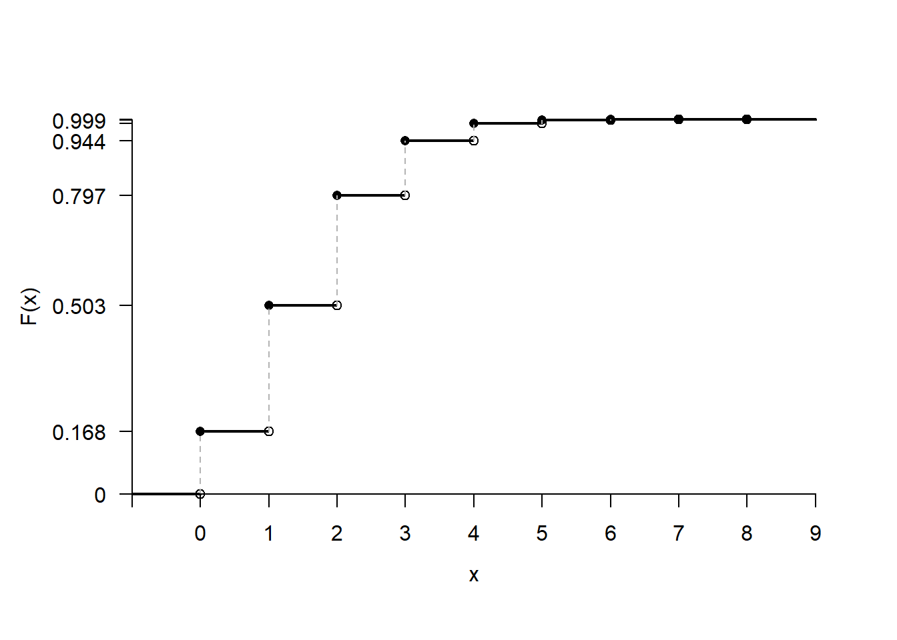

1 Kesikli Rassal Değişkenler
\[ \renewcommand{\E}{\mathbb{E}} \renewcommand{\P}{\mathbb{P}} \renewcommand{\Var}{\mbox{Var}} \renewcommand{\Cov}{\mbox{Cov}} \renewcommand{\plim}{\operatornamewithlimits{plim}} \renewcommand{\cd}{\overset{d}{\longrightarrow}} \renewcommand{\cp}{\overset{p}{\longrightarrow}} \renewcommand{\adistr}{\stackrel{a}{\sim}} \renewcommand{\ind}{1\hspace{-2.5mm}{1}} \]
Bilimsel araştırmalarda değişkenler incelenen birimlerin farklı yönlerine ilişkin bilgi içerirler. Değişken, bir araştırma ya da deneyde ölçülen/gözlemlenen herhangi bir nitelik veya nicelik olarak düşünülebilir. Değişkenleri alacağı değerlerin kesin olarak bilinip bilinmemesine göre deterministik ve rassal olmak üzere ikiye ayırabiliriz. Deterministik değişkenler alacağı değerlere ilişkin belirsizlik içermezler. Aynı girdi kümesiyle aynı sonuçların elde edileceği kesindir. Rassal ya da stokastik değişkenlerin ise alacağı değerler önceden kesin olarak bilinemez, ancak olasılıklı olarak tanımlanabilirler.
Tanım 1.1 (Rassal Değişken) Alacağı değer bir rassal denemenin ya da sürecin sonucuna bağlı olan değişkenlere rassal (stokastik, tesadüfi, rastlantısal) değişken (r.d.) denir. Bir rassal değişkenin alacağı değer önceden kesin olarak bilinemez.
Rassal değişkenleri \(X\), \(Y\), \(Z\), \(W\) gibi büyük harflerle, ve bunların aldığı belirli değerleri ise \(x\), \(y\), \(z\), \(w\) gibi küçük harflerle göstereceğiz.
Rassal değişkenler matematiksel özelliklerine göre kesikli ve sürekli olmak üzere ikiye ayrılır. Bir kesikli rassal değişkenin aldığı değerler sayılabilir ya da listelenebilirdir. Kesikli r.d. \(X\)’in alacağı değerler sonlu ya da sonsuz olabilir. Örneğin, iki zar atımında üste gelen sayıların toplamı, belli bir üretim bandında bir çalışanın yaptığı hata sayısı, bir bankaya 15 dk içinde gelen müşteri sayısı, bir hanede yaşayan kişi sayısı kesikli rassal değişkenlerdir.
Sürekli rassal değişkenler ise belirli bir aralıkta (genellikle reel sayılar doğrusu üzerinde) her hangi bir değeri alabilir ve bu değerler sayılamaz. Örneğin, bir şehirdeki hanehalklarının harcanabilir geliri, belli bir dönemdeki enflasyon oranı, borsa endeksinin günlük kapanış değeri, bir yılda yapılan toplam ihracat tutarı sürekli rassal değişkenlerdir.
Bu bölümde kesikli ve sürekli rassal değişkenlerin dağılımlarını nasıl betimleneceğini ve yorumlanabileceğini öğreneceğiz.
1.1 Kesikli Rassal Değişkenlerin Dağılımları
Kesikli rassal değişkenler sayılabilir olduğu için her bir değere karşılık gelen gerçekleşme olasılıkları hesaplanabilir. Bunun için olasılık kütle fonksiyonu ve birikimli/kümülatif olasılık/dağılım fonksiyonu kullanılabilir.
1.1.1 Olasılık Kütle Fonksiyonu
Tanım 1.2 (Olasılık Kütle Fonksiyonu) \(X\) kesikli rassal değişkeninin olasılık kütle fonksiyonu belirli bir \(x\) değerinin gerçekleşme olasılığını gösterir. \(X\)’in alabileceği değerler sayılabilir olduğu için bunu bir tablo ya da fonksiyon olarak ifade edebiliriz. Olasılık kütle fonksiyonunu \(f(x)\) ya da \(\P(X=x)\) ile göstereceğiz.
\[ f(x)\equiv \P(X=x)=\P(X\mbox{'in belirli bir}~ x ~\mbox{değerine eşit olması}) \tag{1.1}\]
Bu fonksiyonun aşağıdaki iki özelliği sağlaması gerekir:
\[ 1.\quad f(x)\geq 0, \tag{1.2}\]
\[ 2.\quad \sum_x f(x)=1, \tag{1.3}\]
Birinci özelliğe göre olasılık kütle fonksiyonu negatif değerler alamaz. İkinci özellik ise olasılık toplamlarının 1 olmasını gerektirir. Bu toplam \(x\)’in alabileceği tüm değerler üzerinedir ve listelenmiş \(x_i\) değerleri için \[ \sum_i \P(X=x_i)=1,~~~i=1,2,3,\ldots \tag{1.4}\] olarak tanımlanabilir.
Bir kesikli rassal değişkenin alabileceği değerler az sayıda ise olasılık kütle fonksiyonu bir tablo ile gösterilebilir. Örneğin \(X\)’in aldığı değerler \(-1,0,1\) ve bunların olasılıkları, sırasıyla, \(0.25,0.5,0.25\) ise olasılık kütle fonksiyonu \[ \begin{array}{c|ccc} x & -1 & 0 & 1 \\ \hline f(x)=\P(X=x) & 0.25 & 0.5 & 0.25 \\ \end{array} \tag{1.5}\] biçiminde yazılabilir.
Şekil 1.1 bu olasılık kütle fonksiyonunun grafiğini göstermektedir. \(f(x)=\P(X=x)\) fonksiyonunun sadece belirli \(x\) değerlerinde tanımlı olduğuna ve noktaların birleştirilmediğine dikkat ediniz.
1.1.2 Birikimli Olasılık Fonksiyonu
\(X\) kesikli rassal değişkeninin dağılımını betimlemenin bir yolu, bu rassal değişkenin belirli bir değere eşit ya da küçük olma olasılıklarının hesaplanmasıdır. Birikimli olasılık fonksiyonu (ya da kümülatif dağılım fonksiyonu) bu olasılıkları verir.
Tanım 1.3 (Birikimli Olasılık Fonksiyonu) \(X\) kesikli rassal değişkeninin birikimli olasılık fonksiyonu (bof), \(X\)’in belli bir \(x\) değerini aşmamasının olasılığını verir:
\[\begin{eqnarray} F(x_0) &=& \P(X\leq x_0) \\ &=& \sum_{x\leq x_0} f(x) \end{eqnarray}\]
\(F(x_0)\) fonksiyonu \(x\)’in azalmayan bir fonksiyonudur ve 0 ile 1 arasında değerler alır. Kesikli rassal değişkenler için \(F(x_0)\) adım fonksiyonudur.
Denklem 1.5’de olasılık kütle fonksiyonu verilen kesikli rassal değişkenin birikimli olasılık fonksiyonunu bulalım. Bunun için \(X\)’in alabileceği değerleri, birbiriyle örtüşmeyen alt aralıklara bölebiliriz. İlk olarak, \(X\)’in en küçük değeri olan \(-1\)’den daha küçük tüm değerler için \[ F(x_0=-1)=\P(X< -1)=0 \] olur. Bu rassal değişkenin tanımı gereği \(-1\)’den küçük değerler gerçekleşemez.
\(-1\leq x<0\) aralığında \(X\) sadece \(-1\) değerini alabilir. Bu nedenle
\[\begin{eqnarray} F(-1) &=& \P(X\leq -1) \\ &=& \P(X=-1) \\ &=& 0.25 \end{eqnarray}\]
olur. İzleyen aralıkta, \(0\leq x<1\), \(X\) sadece \(0\) değerini alabilir; öyleyse
\[\begin{eqnarray} F(0) &=& \P(X\leq 0) \\ &=& \P(X=-1) + \P(X = 0) \\ &=& 0.25 + 0.50 \\ &=& 0.75 \end{eqnarray}\]
olur. \(X=1\) ve daha büyük değerler için ise
\[\begin{eqnarray} F(1) &=& \P(X\leq 1) \\ &=& \P(X=-1) + \P(X = 0) + \P(X = 1) \\ &=& 0.25 + 0.50 + 0.25 \\ &=& 1 \end{eqnarray}\]
olacaktır. Yani, \(X\)’in tanımı gereği 1 ya da daha küçük bir değerin gerçekleşme olasılığı 1’dir. Bu kesikli rassal değişkenin birikimli olasılık fonksiyonunu daha kompakt bir şekilde aşağıdaki gibi yazabiliriz:
\[ F(x)=P(X\leq x)=\left\{ \begin{array}{ll} 0, & x<-1; \\ 0.25, & -1\leq x<0; \\ 0.75, & 0\leq x<1;\\ 1, & x\geq 1. \\ \end{array}% \right. \tag{1.6}\]
Şekil 1.2 bu kümülatif dağılım fonksiyonunun (Denklem 1.6) grafiğini göstermektedir. Bu grafikteki dolgulu noktalar, \(X\)’in belirli değerlerinde \(F(x)\)’in tanımlı olduğunu gösterir. Örneğin, \(-1\leq x<0\) aralığında, \(X=-1\) ise \(F(-1)=0.25\) olur. Alt değerin içerilmediği \(-1< x<0\) aralığında ise birikimli olasılık değişmediği için grafikte yatay çizgi ile gösterilmiştir. Bu aralığın üst ucunun açık (boş nokta) olduğuna dikkat ediniz. \(X=0\) olduğunda \(F(x)\)’in içi boş noktadan üstteki içi dolu noktaya atladığını görebiliriz. \(0< x<1\) aralığındaki \(X\) değerleri için \(F(x)\) değişmez, yani \(F(0)\) değerine eşittir. \(X\)’in en büyük değeri \(1\) için bof içi dolu noktaya atlar, yani \(F(1)=1\) olur. Bu aslında olasılıklar toplamının tam olarak 1 olması gerektiğine işaret etmektedir.
Kümülatif ya da birikimli olasılık fonksiyonu, belirli bir değere kadar olan tüm olasılıkların toplamını, yani \(X\)’in bu değere eşit ya da daha küçük olma olasılığını gösterir. Yatay çizgiler olasılığın belirli bir aralıkta sabit kaldığını gösterir.
Bir kesikli rassal değişkenin kümülatif dağılım fonksiyonundan hareketle olasılık kütle fonksiyonuna ulaşabiliriz. Bunun için birikimli olasılıkların farkını almamız yeterli olacaktır. \(x_{i-1}\) ve \(x_{i}\) birbirini izleyen iki değer olmak üzere \[ \P(X=x_i) = F(x_i)-F(x_{i-1}) \] olduğu görülebilir. Örneğin \(-1,0,1\) değerlerinde tanımlı \(X\) rassal değişkeni için \(F(-1)=0.25\), \(F(0)=0.5\) ve \(F(1)=1\) olduğunu biliyoruz. Buradan hareketle
\[ \P(X=-1)=F(-1)-F(x<-1)=0.25-0=0.25 \] \[ \P(X=0)=F(0)-F(-1)=0.75-0.25=0.5 \] ve \[ \P(X=1)=F(1)-F(0)=1-0.75=0.25 \] olasılık kütle fonksiyonuna ulaşılır.
Örnek 1.1 3 madeni para atılıyor ve tura (T) gelme sayısı \(X\) ile gösteriliyor. \(X\) rassal değişkeninin olasılık kütle fonksiyonunu ve birikimli olasılık fonksiyonunu bulalım.
Öncelikle örneklem uzayını oluşturalım. Bu deneyde ortaya çıkabilecek sonuçlar şunlardır: \[ S=\{TTT, ~TTY, ~TYT, ~YTT, ~YYT, ~TYY, ~YTY, ~YYY\} \] Bu 8 sonuç karşılıklı olarak bağdaşmazdır ve herbirinin gelme olasılığı aynıdır: 1/8. \(X\)’in alabileceği değerler 0, 1, 2, ve 3 olacaktır. Tablo 1.1 örneklem uzayı ile rassal değişkenini aldığı değerleri ilişkilendirmektedir.
| Sonuçlar | \(X\) (Tura sayısı) | Olasılık | \(f(x)=\P(X=x)\) |
|---|---|---|---|
| YYY | 0 | 1/8 | 1/8 |
| YYT | 1 | 1/8 | |
| YTY | 1 | 1/8 | 3/8 |
| TYY | 1 | 1/8 | |
| YTT | 2 | 1/8 | |
| TYT | 2 | 1/8 | 3/8 |
| TTY | 2 | 1/8 | |
| TTT | 3 | 1/8 | 1/8 |
Buna göre hiç Tura gelmemesi, yani \(YYY\) sonucu, sadece bir şekilde oluşabilir. Öyleyse \[ f(0)=\P(X=0)=\frac{1}{8} \] olur. Bir Tura gelmesi, yani \(X=1\) değerini alması üç farklı şekilde ortaya çıkabilir: \(YYT\), \(YTY\), ve \(TYY\). \(\P(X=1)\) olasılığı bu üç temel sonucun olasılıklarının toplamı olacaktır: \[ f(1) = \P(X=1) = \frac{3}{8} \] Benzer şekilde \[ f(2)=\P(X=2)=\frac{3}{8} \] ve \[ f(3)=\P(X=3)=\frac{1}{8} \] olduğu gösterilebilir.
Buradan hareketle \(X\)’in olasılık kütle fonksiyonu \[ \begin{array}{c|cccc} x & 0 & 1 & 2 & 3 \\ \hline f(x)=P(X=x) & \frac{1}{8} & \frac{3}{8} & \frac{3}{8} & \frac{1}{8} \\ \end{array} \tag{1.7}\]
olarak yazılabilir.
\(X\)’in birikimli olasılık fonksiyonu \[ F(x)=P(X\leq x)=\left\{% \begin{array}{ll} 0, & x<0; \\ \frac{1}{8}, & 0\leq x<1; \\ \frac{1}{2}, & 1\leq x<2;\\ \frac{7}{8}, & 2\leq x<3; \\ 1, & x\geq 3. \\ \end{array}% \right. \] olur. Şekil 1.3 \(X\) rassal değişkeninin birikimli olasılık fonksiyonunu göstermektedir. Bu bof kullanılarak aşağıdaki gibi olasılıklar hesaplanabilir: \[ \P(X\leq1)=F(1)=0.5 \]
\[ \P(1\leq X\leq3) = \P(X=1)+\P(X=2)+\P(X=3)=7/8 \] \[ \P(1\leq X\leq3) = F(3)-F(0) = 1-1/8=7/8 \]
Örnek 1.2 (Kesikli tekdüze (uniform) dağılım) Bir torbada üzerinde 0’dan 9’a kadar rakamların olduğu 10 top olduğunu düşünelim. Toplar birbirinden bağımsız şekilde tekrar torbaya konarak çekilirse her bir rakamın çekilme olasılığı aynı olur. \(X\) çekilen rakamı göstermek üzere bu rassal değişken için olasılık kütle fonksiyonu \[ P(X=x) = \frac{1}{10},\quad x=0,1,2,\ldots,9 \] birikimli olasılık fonksiyonu ise
\[ F(x)=P(X\leq x)= \begin{cases} 0, & x < 0, \\ \frac{x + 1}{10}, & 0 ≤ x ≤ 9, \\ 1, & x > 9. \end{cases} \] olarak yazılabilir. Şekil 1.4 bu rassal değişkenin okf ve bof’unu göstermektedir.
Daha genel olarak \([a,~b ]\) aralığında tanımlı tüm tamsayıların gerçekleşme olasılığı aynı ise bu dağılıma kesikli tekdüze (uniform) adı verilir. Olasılık kütle fonksiyonu \[ P(X=x)=\frac{1}{b-a+1},\quad x=a,a+1,a+2,\ldots,b \tag{1.8}\] ve birikimli olasılık fonksiyonu \[ F(x)=P(X\leq x)= \begin{cases} 0, & x < a~\text{; } \\ \frac{x - a + 1}{b - a + 1}, & a \leq x \leq b~\text{; } \\ 1, & x > b. \end{cases} \tag{1.9}\] olur.
1.2 Beklenen Değer
Tanım 1.4 (Beklenen Değer) Kesikli r. d. \(X\)’in beklenen değeri \[ \E(X) = \sum_x x\cdot f(x), \tag{1.10}\] şeklinde tanımlanır. \(\E(X)\), yani \(X\)’in beklenen değeri, anakütle dağılımının merkezine ilişkin bilgi içerir ve anakütle ortalaması olarak yorumlanır: \(\E(X)=\mu_X\).
Daha genel olarak \(\E(\cdot)\) matematiksel işlemcisini, olasılık kütle fonksiyonunda verilen olasılıklarla ağırlıklandırılmış toplama işlemi olarak düşünebiliriz. Kesikli rassal değişkenler için bu basit olarak tüm değerlere karşılık gelen olasılıkların çarpılıp toplanmasıyla bulunabilir.
Örnek 1.3 Örnek 1.1’de olasılık kütle fonksiyonu aşağıdaki gibi bulunmuştu: \[ \begin{array}{c|cccc} x & 0 & 1 & 2 & 3 \\ \hline f(x)=P(X=x) & \frac{1}{8} & \frac{3}{8} & \frac{3}{8} & \frac{1}{8} \\ \end{array} \]
\(X\)’in beklenen değerini bulalım:
\[\begin{eqnarray} \E(X) &=& \sum_x x\cdot f(x) \\ &=& 0\cdot \frac{1}{8}+1\cdot \frac{3}{8} + 2\cdot \frac{3}{8}+3\cdot \frac{1}{8} \\ &=& \frac{3}{2} \end{eqnarray}\]
Beklenen değeri \(X\) rassal değişkeninin olasılık dağılımının merkezi olarak düşünebiliriz (bkz. Şekil 1.5).
Tanım 1.5 (\(X\)’in fonksiyonunun beklenen değeri) \(g(x)\), \(X\)’in bir fonksiyonu olsun. \(g(x)\)’in beklenen değeri \[ \E\left[ g(X) \right] = \sum_x g(x) \cdot f(x), \tag{1.11}\] ile bulunur. Toplama işlemi \(X\)’in tüm değerleri üzerine tanımlıdır.
Örnek 1.4 Örnek 1.1’deki olasılık kütle fonksiyonuna sahip \(X\) rassal değişkeninin beklenen değerini \(\E(X)=1.5\) olarak bulmuştuk. Şimdi \(X\)’in karesinin beklenen değerini bulalım.
\(g(x)=x^2\) olarak tanımlıdır. Beklenen değer:
\[
\E\left( X^2 \right)=0 \times \frac{1}{8}+1\times \frac{3}{8} + 4\times \frac{3}{8}+9\times \frac{1}{8}=3
\]
\(g(X)\) doğrusal ya da doğrusal olmayan bir forma sahip olabilir. Genel olarak, \(a\) ve \(b\) sabit sayılar olmak üzüre \(g(X)=a+bX\) biçimindeki doğrusal dönüştürmeler için \[ \E[g(X) ] = \E[a+bX ] = a+b\E(X) \] yazılabilir.
Ancak \(g(X)\) doğrusal olmayan bir fonksiyonsa genellikle \[ \E[g(X)]\neq g(E(X)) \] olur. Yani, doğrusal olmayan fonksiyonların beklenen değerini, bu fonksiyonu ortalamada değerleyerek bulamayız. Örneğin \(g(x)=\log(x)\) ve \(g(x)=x^2\) olarak tanımlı fonksiyonlar için \[ \E[\log(X)] \neq \log(\E(X)) \] \[ \E(X^2)\neq [\E(X)]^2 \] olduğu gösterilebilir.
Örnek 1.5 Önceki örnekte \(\E(X)=\mu=1.5\) ve \(\E(X^2)=3\) olduğunu göstermiştik. Öyleyse, \[ \E\left( X^2 \right)=3\neq \E\left( X \right)^2 = 2.25 \] yazabiliriz.
1.2.1 Beklenti İşlemcisinin Özellikleri
Rassal değişken ister kesikli isterse sürekli olsun, beklenti işlemcisi aşağıdaki özellikleri sağlar:
Sabitin beklentisi: Eğer \(c\) bir sabit sayı ise beklenen değeri \[ \E(c)=c \] olur.
Doğrusallık: \(a\) ve \(b\) sabit sayılar olmak üzere \(Y=aX+b\) biçiminde tanımlı doğrusal bir fonksiyonun beklenen değeri:
\[ \E(Y) = \E(aX + b) = a \E(X) + b \] olur.
\(X\) ve \(Y\) iki rassal değişken ise bunların toplamının beklenen değeri \[ \E(X + Y) = \E(X) + \E(Y) \] olur. Daha genel olarak \(X_1,X_2,\ldots,X_n\) bir rassal değişkenler dizisiyse bunların toplamının beklenen değeri \[ \E\left( \sum_{i=1}^n X_i \right) = \E(X_1)+\E(X_2)+\ldots+\E(X_n) \] beklenen değerlerinin toplamıdır.
Önceki özelliği ağırlıklı toplamlar için de yazabiliriz. \(w_1,w_2,\ldots,w_n\) her bir rassal değişkenin ağırlığı olsun. Ağırlıklı toplamın beklenen değeri \[ \E\left( \sum_{i=1}^n w_i~X_i \right) = \sum_{i=1}^n w_i~\E\left(X_i \right) = w_1\E(X_1) + w_2\E(X_2)+ \ldots + w_n\E(X_n) \] ile bulunur.
Örnek 1.6 İnşaat işleriyle uğraşan bir firma girmek istediği bir ihale için maliyet hesabı yapıyor. Sabit maliyetlerin 1000 birim (1000 TL), işçilik maliyetinin ise ayda 320 birim (1000 TL) olacağı tahmin ediliyor. Böylece \(X\) işin tamamlanma süresi (ay cinsinden) olmak üzere toplam maliyet
\[
Y=1000 + 320 X
\] olarak yazılabilir. \(X\)’in dağılımının aşağıdaki gibi verildiğini düşünelim: \[
\begin{array}{c|ccccc}
x & 1 & 2 & 3 & 4 & 5\\
\hline
f(x)=P(X=x) & 0.1 & 0.25 & 0.35 & 0.2 & 0.1 \\
\end{array}
\] Toplam maliyetin beklenen değerini bulun.
Çözüm
Önce \(X\)’in beklentisini bulalım: \[ \E(X) = \sum_x x\cdot f(x)=1(0.1)+2(0.25)+3(0.35)+4(0.2)+5(0.1)=2.95 \] Buradan, beklenen değerin özelliklerinden hareketle toplam maliyetin beklenen değeri \[ \E(Y) = \E(1000+320X) = 1000+320\cdot\E(X)=1944 \] birim, yani \(1,944,000.00\) TL olur.
1.3 Varyans
Matematiksel beklenti \(\E(X)\)’in, \(X\) rassal değişkeninin anakütle dağılımındaki ortalamayı gösterdiğini öğrendik. Bu merkez çevresindeki değişkenliği, \(\Var(X)\) ya da \(\sigma^2\) ile gösterdiğimiz anakütle varyansı ile ölçebiliriz. Bunu örneklem varyansı ile karıştırmamamız gerekir. Anakütle varyansı dağılımın ne kadar yayık olduğuna ilişkin bir parametredir. Tanım gereği, anakütle dağılımın bir özelliğini gösteren parametreler sabit sayılardır ve rassallık içermezler. Örneklem varyansı ise, pratikte anakütle varyansının bilinmediği durumlarda tahmin amacıyla kullandığımız bir istatistiktir. Bir örneklemden hareketle hesaplanan istatistikler veriye bağlı olduğu için rassal değişkenlerdir. Farklı ölçüm ve örneklemeler sonucunda değişebilirler.
Tanım 1.6 (Varyans) Bir rassal değişkenin varyansı, anakütle dağılımında ortalama çevresindeki değişkenliği ölçer. \(X\)’in beklenen değerinden farkının karesinin beklenen değeri olarak tanımlanır: \[ \Var(X) = \E\left[\left(X-\E(X)\right)^2\right] \equiv \sigma_x^2 \tag{1.12}\]
Kesikli rassal değişken \(X\)’in ortalaması \(\E(X)=\mu\) ise varyansı aşağıdaki formülden hareketle bulabiliriz: \[ \Var(X) \equiv \sigma^2 = \sum_x (x-\mu)^2\cdot f(x) \tag{1.13}\] Bu toplam \(x\)’in tüm değerleri üzerinedir.
Matematiksel beklenti işlemcisini kullanarak varyansın kısa yol formülünü elde edebiliriz:
\[\begin{eqnarray} \nonumber \Var(X) &=& \E\left[\left(X-\E(X)\right)^2\right] \\ \nonumber &=& \E\left[(X^2-2X\E(X)+(\E(X))^2)\right] \\ \nonumber &=& \E\left(X^2\right)-2\E\left(X\E(X)\right)+\E\left((\E(X))^2)\right) \\ \nonumber &=& \E\left(X^2\right)-2\E(X)^2+ \E(X)^2 \\ \nonumber &=& \E\left(X^2\right)-\E(X)^2 \end{eqnarray}\]
Burada önce parantezin karesini aldık. Daha sonra her bir terimin beklenen değerini aldık. Bu türetmeleri yaparken \(X\)’in bir rassal değişken olduğuna, popülasyon ortalaması \(E(X)\)’in ise bir sabit sayı olduğuna dikkat ediniz:
\[ \E[ \E(X)] = \E(X), \quad \E[ \E(X)^2] = \E(X)^2 \]
\(\mu=\E(X)\) dersek varyans kısaca \[ \Var(X) \equiv \sigma^2 = \E\left(X^2\right)-\mu^2 \tag{1.14}\] olarak yazılabilir. Öyleyse, beklenen değer \(\E(X)\) ve \[ \E(X^2) = \sum_x x^2 f(x) \] hesaplandıktan sonra kısa yol formülünü kullanarak kesikli rassal değişken \(X\)’in varyansını bulabiliriz.
Tanım 1.7 (Standart Sapma) Bir rassal değişkenin standart sapması varyansının (pozitif işaretli) karekökü olarak tanımlanır: \[ \sigma_x = \sqrt{\Var(X)} \tag{1.15}\]
Örnek 1.7 Üç para atımı deneyinde (Örnek Örnek 1.1) \(X\)’in ve \(X^2\)’nin beklenen değerlerini hesaplamıştık. Buradan hareketle \(X\)’in varyansı \[ \Var(X) = \E\left(X^2\right)-\mu_x^2 = 3 - (3/2)^2=0.75 \] standart sapması ise \[ \sigma_x = \sqrt{0.75} = 0.866 \]
olur.
1.3.1 Varyansın özellikleri
1) Sabit bir sayının varyansı sıfırdır: \[ \Var(c) = 0 \]
2) \(a\) ve \(b\) sabit sayılar olmak üzere \[ Y = a + bX \] biçiminde doğrusal bir dönüştürmenin varyansı \[ \Var(Y)=\Var\left( a + bX \right) = b^2\Var(X) = b^2\sigma_X^2 \] olur. Standart sapması ise \[ \sigma_Y = \sqrt{\Var(Y)} = \sqrt{b^2\Var(X)} =|b|\sigma_X \]
3) \(X\) ortalaması \(\mu_x\) ve standart sapması \(\sigma_x\) olan bir rassal değişken olsun. Aşağıdaki dönüştürmeyi düşünelim: \[ Z=\frac{X-\mu_x}{\sigma_x} \] \(\mu_x\) ve \(\sigma_x\) sabit sayılar olduğu için bu dönüştürme \[ Z=a+bX, \quad a=-\frac{\mu_x}{\sigma_x},\quad b=\frac{1}{\sigma_x} \] doğrusal formda da ifade edilebilir. Öyleyse \[ \E(Z) = \E(a+bX) = a+b\mu_x=0 \] ve \[ \Var(Z) = b^2\sigma_x^2 = \frac{1}{\sigma_x^2}\sigma_x^2 = 1 \] bulunur.
Örnek 1.8 Örnek 1.6’de \(X\)’in ve \(Y\)’nin varyansını ve standart sapmasını bulun.
Çözüm \(X\)’in varyansı için önce \(X^2\)’nin beklentisini bulalım:
\[\begin{align*} \E(X^2) &= \sum_x x^2\cdot f(x) \\ &= 1^2(0.1)+2^2(0.25)+3^2(0.35)+4^2(0.2)+5^2(0.1)\\ &= 9.95 \end{align*}\]Buradan
\[\begin{align*} \Var(X) &= \E(X^2)-[\E(X)]^2 \\ &= 9.95-2.95^2 \\ &= 1.2475 \end{align*}\]bulunur. Öyleyse \(Y=1000+320X\)’nin varyansı \[ \Var(Y) = 320^2\Var(X) = 127744 \] ve standart sapması \[ \sigma_Y = \sqrt{\Var(Y)} = \sqrt{127744}=357.41 \] olarak bulunur.
1.4 Momentler
Bir dağılımın momentleri, dağılımın şekli hakkında önemli bilgiler sağlar. Momentler, ortalama, varyans, çarpıklık ve basıklık gibi özellikleri anlamamıza yardımcı olur. Finans, ekonomi, mühendislik ve diğer bilim dallarında, verilerin analizi ve yorumlanması sırasında yaygın olarak kullanılırlar. Momentler, anakütle dağılımının belirli özelliklerini yansıtan parametrelerle ilişkilidir. İzleyen bölümlerde göreceğimiz gibi, momentler örneklemden hareketle anakütle parametrelerinin tahmin edilmesinde önemli bir rol oynar.
Tanım 1.8 (Moment) Kesikli rassal değişken \(X\)’in \(k\)nci momenti \[ \mu_k=\E(X^k)=\sum_x x^k f(x), \quad k=0,1,2,... \] \(k\)nci kuvvetinin beklenen değeri olarak tanımlanır. İlk dört moment aşağıdaki gibi yazılabilir:
| Moment | \(\mu_k\) | Tanım | |
|---|---|---|---|
| 1. moment | \(\mu_1\) | \(\E(X)\) | \(=\) anakütle ortalaması |
| 2. moment | \(\mu_2\) | \(\E(X^2)\) | \(= \Var(X) + \mu_1^2\) |
| 3. moment | \(\mu_3\) | \(\E(X^3)\) | |
| 4. moment | \(\mu_4\) | \(\E(X^4)\) |
Birinci moment, \(\mu_1\), rassal değişkenin ortalamasını, yani beklenen değerini ifade eder. \(X\)’in karesinin beklenen değeri, yani ikinci moment, varyans ile ilişkilidir. Kısayol varyans formülünden (bkz. Denklem 1.14) hareketle
\[
\E(X^2) = \Var(X) + \mu_1^2
\] olduğu kolayca görülebilir. Üçüncü moment, \(\mu_3\), dağılımın çarpıklığına ilişkin bilgi içerir. Dördüncü moment, \(\mu_4\), dağılımın basıklığı ve sivriliği (kurtosis) hakkında bilgi içerir.
Örnek 1.9 Üç para atımı deneyinde (Örnek Örnek 1.1) \(X\)’in birinci ve ikinci momentlerini hesaplamıştık. Üçüncü ve dördüncü momentleri bulalım:
\[
\E(X^3)=0 \frac{1}{8}+1 \frac{3}{8} + 2^3\frac{3}{8}+3^3\frac{1}{8}=6.75
\] ve \[
\E(X^4)=0 \frac{1}{8}+1 \frac{3}{8} + 2^4\frac{3}{8}+3^4\frac{1}{8}=16.5
\] olur.
Tanım 1.9 (Merkezi Moment) Kesikli r.d. \(X\)’in \(k\)nci merkezi momenti, \(X\)’in beklenen değerden (yani birinci momentten) farkının \(k\)nci kuvvetinin beklenen değeri olarak tanımlanır: \[ m_k=\E((X-\mu_1)^k)=\sum_x (x-\mu_1)^k f(x) \quad k=0,1,2,... \] Örneğin ilk dört merkezi moment aşağıdaki gibi yazılabilir:
| \(m_k\) | Tanım | ||
|---|---|---|---|
| 1. merkezi moment | \(m_1\) | \(\E(X)-\mu_1\) | \(=0\) |
| 2. merkezi moment | \(m_2\) | \(\E((X-\mu_1)^2)\) | \(=\Var(X)\) |
| 3. merkezi moment | \(m_3\) | \(\E((X-\mu_1)^3)\) | |
| 4. merkezi moment | \(m_4\) | \(\E((X-\mu_1)^4)\) |
Birinci merkezi moment, yani \(X\)’in anakütle ortalamasından (beklentisinden) farkının beklenen değeri sıfır olur. İkinci merkez moment ile anakütle varyansı tanım olarak aynıdır.
Örnek 1.10 Üç para atımı deneyinde (Örnek Örnek 1.1) \(X\)’in üçüncü merkezi momenti
\[\begin{align*} m_3 &= \E((X-\mu_1)^3) \\ &= \sum_x (x-\mu)^3 f(x) \\ &= \left(0-\frac{3}{2}\right)^3\times \frac{1}{8} +\left(1-\frac{3}{2}\right)^3\times \frac{3}{8} + \left(2-\frac{3}{2}\right)^3\times\frac{3}{8} +\left(3-\frac{3}{2}\right)^3\times\frac{1}{8} \\ &= 0 \end{align*}\]ve dördüncü merkezi momenti
\[\begin{align*} m_4 &= \E((X-\mu_1)^4) \\ &= \sum_x (x-\mu)^4 f(x) \\ &= \left(0-\frac{3}{2}\right)^4\times \frac{1}{8} +\left(1-\frac{3}{2}\right)^4\times \frac{3}{8} + \left(2-\frac{3}{2}\right)^4\times\frac{3}{8} +\left(3-\frac{3}{2}\right)^4\times\frac{1}{8} \\ &= 1.3125 \end{align*}\]olarak bulunur. Üçüncü merkezi moment \(m_3\)’ün 0 olması dağılımın simetrikliğini göstermektedir.
Tanım 1.10 (Standart Moment) Kesikli r.d. \(X\)’in \(k\)nci standart momenti \[ \gamma_k=\frac{m_k}{\sigma^k} \quad k=0,1,2,... \] şeklinde tanımlanır. Burada \(\sigma\) populasyon standart sapmasıdır: \[ \sigma=\sqrt{\Var(X)} =\sqrt{\E\left[\left(X-\mu_1 \right)^2\right]} \] İlk dört standart moment aşağıdaki gibi yazılabilir:
| \(\gamma_k\) | Tanım | ||
|---|---|---|---|
| 1. standart moment | \(\gamma_1\) | \(m_1/\sigma\) | \(=0\) |
| 2. standart moment | \(\gamma_2\) | \(m_2/\sigma^2\) | \(=1\) |
| 3. standart moment | \(\gamma_3\) | \(\E((X-\mu_1)^3)/\sigma^3\) | çarpıklık katsayısı |
| 4. standart moment | \(\gamma_4\) | \(\E((X-\mu_1)^4)/\sigma^4\) | basıklık katsayısı |
Birinci ve ikinci standart moment tanım gereği her zaman, sırasıyla, 0 ve 1 olur. Üçüncü standart moment ya da çarpıklık (skewness) katsayısı dağılımın simetrisine ilişkin bilgi içerir. Simetrik dağılımlar için \(\gamma_3\) sıfır olur. Sağa çarpık dağılımlar için \(\gamma_3>0\), sola çarpık dağılımlar için ise \(\gamma_3<0\) olur. Dördüncü standart moment, \(\gamma_4\), basıklık katsayısı olarak bilinir ve dağılımın merkezdeki sivriliğini ve kuyruk kalınlığını gösterir. \(\gamma_4\) genellikle normal dağılım ile karşılaştırılarak yorumlanır.
Örnek 1.11 Üç para atımı deneyinde (Örnek 1.1) \(\gamma_1=0\), \(\gamma_2=1\), ve \(\gamma_3=0\) olduğu açıktır. Kesikli rassal değişken \(X\) için dördüncü standart momenti hesaplayalım: \[ \gamma_4 = \frac{m_4}{\sigma^4} = \frac{1.3125}{0.866^4} = 2.334 \] Bu dağılımın basıklık katsayısı 2.334 olarak bulunur.
1.5 Bazı Kesikli Dağılımlar
Kesikli rassal değişkenlerin sayılabilir bir dizi olduğunu ve olası sonuçların kümülatif dağılım ve olasılık kütle fonksiyonları ile tanımlanabileceğini öğrendik. Kesikli ressal değişkenlerin pratikte yaygın olarak kullanılan bazı dağılımları vardır. Bu dağılımlar, farklı türdeki tesadüfi olayları ve süreçleri modellemek için kullanılır. Bunlar arasında en önemlileri Bernoulli, Binom, Hipergeometrik ve Poisson dağılımlarıdır. Bu bölümde bu dağılımların özelliklerini inceleyeceğiz.
1.5.1 Bernoulli Dağılımı
Bernoulli dağılımı en temel kesikli dağılımdır ve iki olası sonuçtan birine sahip olan deneyler/süreçler için kullanılır. Rassal denemenin olası sonuçları genellikle “başarı” (1) ve “başarısızlık/yenilgi” (0) olarak adlandırılır. Bir Bernoulli denemesinde başarı olayının gerçekleşme olasılığı \(p\), başarısızlık ise \(1-p\) olarak tanımlıdır:
\[ f(x)=\left\{% \begin{array}{ll} p, & ~X=1~\hbox{ise,} \\ 1-p, & ~X=0~\hbox{ise.} \\ \end{array}% \right. \tag{1.16}\]
Örnek olarak madeni para atma (Yazı-Tura), bir üretim bandından çekilen bir ürününün hatalı olup olmaması (defolu-defosuz), bir öğrencinin başarısı (geçti-kaldı), rassal seçilen bir hanenin özel sigortasının olması (var-yok) verilebilir.
\(X\) bir Bernoulli rassal değişkeni olsun. \(X\)’in beklenen değeri \[ \E(X)=\sum_x xf(x)=p\cdot1+(1-p)\cdot 0 =p, \tag{1.17}\] ikinci momenti \[ \E(X^2)=\sum_x x^2f(x)=p\cdot1+(1-p)\cdot 0 =p, \tag{1.18}\]
varyansı (ikinci merkezi moment) \[ \Var(X)=\E(X^2)-(\E(X))^2=p-p^2=p(1-p) \tag{1.19}\] ve standart sapması \[ \sigma = \sqrt{p(1-p)} \tag{1.20}\] olarak bulunur.
Örnek 1.12 Telefonda anket yapan bir firma geçmiş bilgilerden hareketle, bir kişinin anket sorularına cevap vermeyi kabul etme olasılığını 0.6, reddetme olasılığını 0.4 olarak bulmuştur. Görüşme reddedilirse \(X=0\), kabul edilirse \(X=1\) değerlerini almak üzere olasılık dağılımı aşağıdaki gibi yazılabilir: \[ \begin{array}{c|cc} x & 0 & 1 \\ \hline f(x)=P(X=x) & 0.4 & 0.6 \\ \end{array} \] \(X\)’in beklenen değerini ve varyansını bulun.
Çözüm:
\[\begin{align*} \E(X) &= 0\cdot(0.4) + 1\cdot (0.6) \\ &= 0.6\equiv p_x \end{align*}\] \[\begin{align*} \Var(X) &= \E(X^2)-[\E(X)]^2 \\ &= (0\cdot (0.4)+1^2\cdot 0.6) - 0.6^2 \\ &= 0.24\equiv p_x(1-p_x) \end{align*}\]Bu örnekte anket firmasının, birbirinden bağımsız olarak, 10 kişiyle görüştüğünü düşünelim. Bu görüşmelerin 5’inin başarıyla sonuçlanma olasılığı kaçtır? Buna benzer olasılıkların betimlenmesinde Binom dağılımı kullanılır.
1.5.2 Binom Dağılımı
Binom dağılımının temelinde birbirinden bağımsız olarak tekrarlanan Bernoulli denemeleri yer alır. Belirli sayıda (\(n\)) bağımsız Bernoulli denemesinde toplam başarı sayısını modellemek için kullanılır. Örnek olarak bir sınıftaki öğrencilerin bir sınavda başarılı olma sayısını, bir üretim hattında belirli sayıda ürünün hatalı olup olmamasını, bir ankete katılanların belirli bir soruya evet/hayır cevabı verme sayısını verebiliriz.
\(Z\) bir Bernoulli(\(p\)) rassal değişkeni olsun ve başarı/yenilgi olasılıkları \[ \P(Z=1)=p,\quad \P(Z=0)=1-p \] olarak tanımlansın.
\(X\) rassal değişkenini, toplam başarı sayısı, yani \(n\) bağımsız Bernoulli denemesinde \(Z\)’nin \(1\) değerini alma sayısı olarak tanımlayalım: \[ X=\sum_i Z_i=\mbox{toplam başarı sayısı} \tag{1.21}\] \(Z\) sadece 0 ve 1 değerlerini aldığı için tüm sonuçlar üzerine toplam aldığımızda başarı sayısına ulaşırız. Binom dağılımı \(X\)’in olası sonuçlarının olasılıklarını belirler.
Toplam başarı sayısı \(X\) aşağıda olasılık kütle fonksiyonu verilen \(Binom(n,p)\) dağılımına uyar: \[ f(x) = \left(\begin{array}{c} n \\ x \end{array}\right) p^x (1-p)^{n-x} = \frac{n!}{x!(n-x)!}p^x (1-p)^{n-x}, \quad x=0,1,2,\ldots,n \tag{1.22}\]

Şekil 1.6 \(X\sim~B(n=10,~p=0.2)\) dağılımının olasılık kütle ve kümülatif dağılım fonksiyonlarını göstermektedir.
Bir \(Binom(n,p)\) rassal değişkeninin beklenen değer, varyans ve standart sapmasının \[ \E(X)=np \tag{1.23}\] \[ \Var(X)=np(1-p) \tag{1.24}\] \[ \sigma = \sqrt{\Var(X)}=\sqrt{np(1-p)} \tag{1.25}\] olduğu gösterilebilir.
Örnek 1.13 Örnek 1.13’de verilen Bernoulli dağılımını kullanarak 10 görüşmenin 5’inin başarıyla sonuçlanma olasılığını bulun. Bunun için genel olarak “n denemede x başarı” olasılığını veren Binom dağılımını bulun.
Çözüm
Başarı olasılığı \(=0.6\), yenilgi olasılığı \(0.4\) olduğuna göre “n denemede x başarı” olasılığını veren Binom dağılımı \[ f(x) = \frac{n!}{x!(n-x)!} 0.6^x\cdot 0.4^{n-x} \] olur. \(n=10\) denemede \(x=5\) başarı olasılığı \[ \P(X=5) = \frac{10!}{5!(10-5)!} 0.6^5\cdot 0.4^{10-5} \approx 0.20 \] yani yaklaşık \(\%20\)’dir.
R’da Binom dağılımına ilişkin hesaplamaları yapmak için dbinom() ve pbinom() fonksiyonları kullanılabilir. Önceki örnekte olasılık kütle fonksiyonu ve birikimli olasılık fonksiyonunu bulalım:
# Parametreler
n <- 10
p <- 0.6
# Başarı sayıları
x <- 0:n
# Olasılık Kütle Fonksiyonu (PMF)
pmf <- dbinom(x, size = n, prob = p)
# Birikimli Olasılık Fonksiyonu (CDF)
cdf <- pbinom(x, size = n, prob = p)
print(cbind(x,pmf,cdf), digits=2) x pmf cdf
[1,] 0 0.0001 0.0001
[2,] 1 0.0016 0.0017
[3,] 2 0.0106 0.0123
[4,] 3 0.0425 0.0548
[5,] 4 0.1115 0.1662
[6,] 5 0.2007 0.3669
[7,] 6 0.2508 0.6177
[8,] 7 0.2150 0.8327
[9,] 8 0.1209 0.9536
[10,] 9 0.0403 0.9940
[11,] 10 0.0060 1.0000Şekil 1.7 Binom(10,0.6) dağılımının olasılık kütle ve birikimli olasılık fonksiyonlarını göstermektedir.

1.5.3 Hipergeometrik Dağılım
Eğer Bernoulli denemeleri birbirinden bağımsız değilse toplam başarı sayısı Binom dağılımına uymaz. İçinde \(B\) tane başarı bulunan \(N\) nesneli rassal bir örneklemde, toplam başarı sayısı \(X\)’in olasılık dağılımı
\[ f(x) = \frac{\left(\begin{array}{c} B \\ x \end{array}\right) \left(\begin{array}{c} N-B \\ n-x \end{array}\right)}{\left(\begin{array}{c} N \\ n \end{array}\right)} \tag{1.26}\] olur. Burada \(x\) rassal değişkeni, \(\max(0,n-(N-B))\) ile \(\min(n,B)\) arasında tamsayı değerler alabilir. Beklenen değer ve varyans, sırasıyla, \[ E(X)=np, \tag{1.27}\] \[ \Var(X)=\frac{N-n}{N-1}np(1-p) \tag{1.28}\] olarak bulunur. Burada \[ p=\frac{B}{N} \] başarı olasılığıdır.
Örnek 1.14 Bir sınıfta 20 öğrenci bulunmaktadır. Bu öğrencilerden 8’i kız, 12’si erkektir. Sınıf öğretmeni rassal olarak 5 öğrenci seçiyor. Seçilen öğrencilerden 3’ünün kız olma olasılığı kaçtır?
Çözüm: Anakütlenin boyutu \(N=20\) ve seçilen öğrenci sayısı \(n=5\) olduğuna göre olanaklı kombinasyonların sayısı \[ \frac{N!}{n!(N-n)!} = \frac{20!}{5!(20-5)!} = 15504 \] olur. Anakütle 8 başarı (kız öğrenci) 12 yenilgi (erkek öğrenci) içerdiğine göre, 8 kız öğrenciden 3’ünü seçmenin olasılığı \[ \frac{B!}{x!(B-x)!} = \frac{8!}{3!(8-3)!} = 56 \] 12 erkek öğrenciden 2’sinin seçilme olasılığı \[ \frac{(N-B)!}{(n-x)!(N-B-n+x)!} = \frac{12!}{2!(20-8-5+3)!} = 66 \] Böylece 3 kız öğrencinin seçilme olasılığı \[ f(3)=\P(X=3) = \frac{56\cdot 66}{15504}=0.2384 \] yani yaklaşık \(\%23.84\) olur.
R’da hipergeometrik olasılık kütle ve birikimli dağılım fonksiyonları için dhyper() ve phyper() fonksiyonlarını kullanabiliriz:
# Hipergeometrik Dağılım Parametreleri
N <- 20 # Toplam öğrenci sayısı
K <- 8 # Kız öğrenci sayısı
n <- 5 # Seçilen öğrenci sayısı
# Başarı sayısı (kız) değerleri
x <- 0:n
# PMF Hesaplama
pmf <- dhyper(x, K, N - K, n)
# CDF Hesaplama
cdf <- phyper(x, K, N - K, n)
print(cbind(x,pmf,cdf), digits=2) x pmf cdf
[1,] 0 0.0511 0.051
[2,] 1 0.2554 0.307
[3,] 2 0.3973 0.704
[4,] 3 0.2384 0.942
[5,] 4 0.0542 0.996
[6,] 5 0.0036 1.000Örnek 1.15 Bir fabrikada üretilen 100 üründen 30’u hatalı (düşük kaliteli), 70’i ise kalitelidir. Kalite kontrol uzmanı, rastgele 10 ürün seçmekte ve bu seçilen ürünlerin içinde kaç tane hatalı olduğunu incelemektedir. Bu durumda, seçilen 10 ürün içinde \(x\) tane hatalı ürün olma olasılığını veren dağılımı bulun. Bu 10 üründe 2 hatalı olma olasılığı kaçtır?
Çözüm: Bu olasılıklar hipergeometrik dağılım ile bulunabilir. Verilenleri özetleyelim: \[
N=100,\quad B=30,\quad n=10
\] \(n=10\) boyutlu bir örneklemde hatalı ürün sayısı \(x\) olasılığı \[
f(x)=\P(X=x) = \frac{\left(\begin{array}{c}
B \\
x
\end{array}\right) \left(\begin{array}{c}
N-B \\
n-x
\end{array}\right)}{\left(\begin{array}{c}
N \\
n
\end{array}\right)}=\frac{\left(\begin{array}{c}
30 \\
x
\end{array}\right) \left(\begin{array}{c}
70 \\
10-x
\end{array}\right)}{\left(\begin{array}{c}
100 \\
10
\end{array}\right)}
\] \(x=2\) hatalı ürün olma olasılığını R ile bulalım:
choose(30,2)*choose(70,8)/choose(100,10)[1] 0.2372316Seçilen 10 üründen 2’sinin düşük kaliteli olma olasılığı yaklaşık \(\%23.7\)’dir.
\(x=0,1,2,\ldots,10\) için olasılıklar ve birikimli olasılıkları hesaplayalım:
# Hipergeometrik Dağılım Parametreleri
N <- 100 # Toplam ürün sayısı
B <- 30 # Hatalı ürün sayısı
n <- 10 # Seçilen ürün sayısı
# Hatalı ürün sayısı (x) değerleri
x <- 0:n
# PMF Hesaplama
pmf <- dhyper(x, B, N - B, n)
# CDF Hesaplama
cdf <- phyper(x, B, N - B, n)
# ekrana yazdır
print(cbind(x, round(pmf,3), round(cdf,3))) x
[1,] 0 0.023 0.023
[2,] 1 0.113 0.136
[3,] 2 0.237 0.373
[4,] 3 0.281 0.654
[5,] 4 0.208 0.862
[6,] 5 0.100 0.961
[7,] 6 0.031 0.993
[8,] 7 0.006 0.999
[9,] 8 0.001 1.000
[10,] 9 0.000 1.000
[11,] 10 0.000 1.000Şekil 1.8 \(X\)’in olasılık kütle ve birikimli olasılık fonksiyonlarını göstermektedir.
1.5.4 Poisson Dağılımı
Poisson dağılımı, belirli bir zaman diliminde veya belirli bir alanda nadiren gerçekleşen olayların sayısını modellemek için kullanılır. Olaylar birbirinden bağımsızdır ve belirli bir ortalama hızda gerçekleşir. Örnek olarak bir çağrı merkezine belirli bir zaman diliminde gelen çağrı sayısı, bir karayolunda belirli bir sürede meydana gelen trafik kazası sayısı, bir bankaya belirli bir süre içinde gelen müşteri sayısı verilebilir.
Kesikli rassal değişken \(X\) bir olayın belirli bir (göreli kısa) zaman diliminde gerçekleşme sayısını göstersin. \(X\sim Poisson(\lambda)\) ile gösterdiğimiz Poisson dağılımının olasılık kütle fonksiyonu aşağıdaki gibi yazılabilir: \[ f(x,\lambda)=\frac{\lambda^x e^{-\lambda}}{x!}, \quad x=0,1,2,\ldots \tag{1.29}\] Bu tanımda \(X\) olayların sayısı, bilinmeyen parametre \(\lambda\) ise ortalama olay sayısıdır. \(\lambda\) parametresi Poisson dağılımının şekli ve merkezi ile doğrudan ilişkilidir ve dağılımın özelliklerini belirler. Poisson dağılımı, nadir olayların modellemesi ve analizi için güçlü bir araçtır ve çeşitli uygulamalarda yaygın olarak kullanılır. Şekil 1.10 ortalaması 2 olan bir Poisson rassal değişkeninin olasılık kütle ve kümülatif dağılım fonksiyonlarını göstermektedir.

Bir Poisson rassal değişkeninin beklenen değer ve varyansının \[ \E(X)=\lambda \] \[ \Var(X)=\lambda \] olduğu gösterilebilir.
Örnek 1.16 Bir kütüphanede bir günde ödünç alınan kitap sayısı ortalaması 3 olan bir Poisson dağılımı ile temsil edilebilmektedir. Buna göre bir günde ödünç alınan kitap sayısının 3’ten fazla olma olasılığı kaçtır?
Çözüm:
Verilenlere göre ödünç kitap sayısı \(X\sim~Poisson(\lambda=3)\) dağılımına uymaktadır, yani: \[ f(x)=\P(X=x)=\frac{\lambda^x e^{-\lambda}}{x!} = \frac{3^x e^{-3}}{x!} \] yazabiliriz. Buradan \(X\)’in 0, 1, 2, ve 3 olma olasılıkları: \[ \P(X=0) = \frac{3^0 e^{-3}}{0!}=e^{-3}\approx 0.05 \] \[ \P(X=1) = \frac{3^1 e^{-3}}{1!}=3e^{-3}\approx 0.15 \] \[ \P(X=2) = \frac{3^2 e^{-3}}{2!}\approx 0.224 \] \[ \P(X=3) = \frac{3^3 e^{-3}}{3!}\approx 0.224 \] olur. Öyleyse \[ \P(X>3) = 1-\P(X\leq 3) = 1-(0.05+0.15+0.224+0.224)=0.352 \] yaklaşık \(\%35.2\) bulunur.
R’da Poisson dağılımının olasılık kütle ve birikimli dağılım fonksiyonlarını dpois() ve ppois() kullanarak da bulabiliriz:
# Poisson Dağılımı Parametreleri
lambda <- 3 # Ortalama olay sayısı (günde ortalama 3 kitap ödünç alma)
# Olay sayısı (x) değerleri
x <- 0:10 # 0'dan 10'a kadar olan değerler
# PMF Hesaplama
pmf <- dpois(x, lambda)
# CDF Hesaplama
cdf <- ppois(x, lambda)
# ekrana yazdır
print(cbind(x, pmf=round(pmf,3), cdf=round(cdf,3))) x pmf cdf
[1,] 0 0.050 0.050
[2,] 1 0.149 0.199
[3,] 2 0.224 0.423
[4,] 3 0.224 0.647
[5,] 4 0.168 0.815
[6,] 5 0.101 0.916
[7,] 6 0.050 0.966
[8,] 7 0.022 0.988
[9,] 8 0.008 0.996
[10,] 9 0.003 0.999
[11,] 10 0.001 1.000Şekil 1.8 \(X\)’in olasılık kütle ve birikimli olasılık fonksiyonlarını göstermektedir.
1.6 Kesikli Rassal Değişkenlerin Birleşik Dağılımları
Bu bölümde birden fazla rassal değişkenin ortak davranışını açıklamakta kullanabileceğimiz araçları öğreneceğiz. İki ve daha fazla kesikli rassal değişkeninin belirli değerlere eşit olma olasılıklarını betimlemek amacıyla birleşik olasılık kütle fonksiyonu kullanılabilir.
1.6.1 Birleşik Olasılık Kütle Fonksiyonu
Tanım 1.11 (Birleşik Olasılık Kütle Fonksiyonu) \(X\) ve \(Y\) iki kesikli rassal değişken olsun. Bunların birleşik (ortak) olasılık fonksiyonu \[ f(x,y)=\P(X=x\cap Y=y) \tag{1.30}\] bu rassal değişkenlerin aynı anda belirli bir değere eşit olma olasılıklarını verir. İkili birleşik olasılıkların toplamı her zaman 1 olur: \[ \sum_i\sum_j f(x_i,y_j) = 1, \quad f(x_i,y_j)\geq 0 \]
Bu rassal değişkenlerin alabileceği değerler az sayıda ise birleşik (ortak) olasılıklar bir tablo halinde verilebilir (bkz çapraz tablolar). Tablodaki hücreler \(\P(X=x\cap Y=y)\) ile gösterilen kesişim olasılıklarını gösterir.
Daha genel olarak \(X_1,X_2,\ldots,X_k\) \(k\) tane kesikli r.d. ise bunların ortak olasılık fonksiyonu şöyle olur: \[ f(x_1,x_2,\ldots,x_k)=P(X_1=x_1\cap X_2=x_2,\cap,\ldots,\cap X_k=x_k) \tag{1.31}\]
\(k\) değişkenli bir ortak olasılık kütle fonksiyonu için olasılıklar toplamı 1 olmak zorundadır.
Örnek 1.17 \(X\): Bir bankada 1 nolu gişede sırada bekleyen müşteri sayısını, \(Y\): 2 nolu gişede sırada bekleyen müşteri sayısını göstermektedir. Bu iki r.d. için ortak olasılık fonksiyonu aşağıdaki tabloda verilmiştir.
| \(x\setminus y\) | 0 | 1 | 2 | 3 | Toplam |
|---|---|---|---|---|---|
| 0 | 0.03 | 0.17 | 0 | 0 | 0.20 |
| 1 | 0.22 | 0.28 | 0.10 | 0 | 0.60 |
| 2 | 0 | 0.08 | 0.05 | 0.02 | 0.15 |
| 3 | 0 | 0 | 0.03 | 0.02 | 0.05 |
| Toplam | 0.25 | 0.53 | 0.18 | 0.04 | 1.00 |
Bu birleşik olasılık fonksiyonun göre birinci ve ikinci gişede aynı anda bekleyen birer müşteri olma olasılığı 0.28’dir: \[ f(x=1,y=1)=\P(X=1\cap Y=1)=0.28 \] Benzer şekilde diğer olasılıklar tablo hücrelerinde tanımlanmıştır. Olasılıklar toplamının 1 olduğuna dikkat ediniz.
1.6.2 Marjinal Olasılık Fonksiyonu
Birleşik olasılık fonksiyonu biliniyorsa, bundan hareketle marjinal ya da tekil olasılık fonksiyonları elde edilebilir.
Tanım 1.12 (Marjinal Olasılık Fonksiyonu) \(X\)’in marjinal olasılık fonksiyonu birleşik olasılık fonksiyonundan hareketle kolayca hesaplanabilir: \[ f(x)=\sum_y f(x,y) \tag{1.32}\] Burada toplam \(Y\)’nin tüm değerleri üzerinedir.
Benzer şekilde \(Y\)’nin marjinal olasılık fonksiyonu: \[ f(y)=\sum_x f(x,y) \tag{1.33}\]
Örnek 1.18 Örnek 1.17’de tablo olarak verilen birleşik olasılık fonksiyonundan hareketle \(X\)’in ve \(Y\)’nin marjinal olasılık fonksiyonlarını bulalım.
\(X\)’in marjinal olasılık kütle fonksiyonunu bulmak için her bir \(x\) değeri için \(Y\) üzerine toplamları almamız gerekir:
\[\begin{eqnarray} \nonumber f_x(x=0) &=& \P(X=0) \\ \nonumber &=& \sum_y f(x=0,~y) \\ \nonumber &=& \P(X=0 \cap Y=0) +\P(X=0 \cap Y=1)+\P(X=0 \cap Y=2)+\P(X=0 \cap Y=3)\\ \nonumber &=& 0.03+0.17+0+0 \\ \nonumber &=& 0.20 \end{eqnarray}\]
Benzer şekilde her bir \(x\) değeri için satır toplamları \(X\)’in marjinal olasılıklarını verir. Bunu bir tablo haline getirebiliriz: \[ \begin{array}{c|cccc} x & 0 & 1 & 2 & 3 \\ \hline f_x(x)=P(X=x) & 0.20 & 0.60 & 0.15 & 0.05 \\ \end{array} \]
\(Y\)’nin marjinal olasılık fonksiyonunu bulmak için her bir \(Y\) değeri için sütun toplamlarını almamız gerekir:
\[\begin{eqnarray} \nonumber f_y(y) &=& \P(Y=0) \\ \nonumber &=& \sum_x f(x,~y=0) \\ \nonumber &=& \P(X=0 \cap Y=0) +\P(X=1 \cap Y=0)+\P(X=2 \cap Y=0)+\P(X=3 \cap Y=0)\\ \nonumber &=& 0.03+0.22+0+0 \\ \nonumber &=& 0.25 \end{eqnarray}\]
Her bir \(y\) değeri için sütun toplamlarını hesapladıktan sonra \(Y\)’nin marjinal olasılık fonksiyonu
\[ \begin{array}{c|cccc} y & 0 & 1 & 2 & 3 \\ \hline f_y(y)=P(Y=y) & 0.25 & 0.53 & 0.18 & 0.04 \\ \end{array} \] olarak yazılabilir. Marjinal olasılıkların toplamı 1 olmalıdır.
1.6.3 Koşullu Olasılık Fonksiyonu
Tanım 1.13 (Koşullu Olasılık Fonksiyonu) \(Y=y\) verilmişken \(X\)’in koşullu olasılık fonksiyonu: \[ f(x\mid y)=\frac{f(x,y)}{f(y)} = \frac{\P(X=x\cap Y=y)}{\P(Y=y)} \tag{1.34}\] Benzer şekilde \(X=x\) verilmişken \(Y\)’nin koşullu olasılık fonksiyonu: \[ f(y\mid x)=\frac{f(x,y)}{f(x)}= \frac{\P(X=x\cap Y=y)}{\P(X=x)} \tag{1.35}\] olarak tanımlıdır.
Örnek 1.19 Örnek 1.17’de tablo olarak verilen birleşik olasılık fonksiyonundan hareketle \(X=1\) verilmişken ve \(Y=0\) olma olasılığını bulun. Genel olarak \(X=1\) verilmişken \(Y\)’nin koşullu olasılık fonksiyonunu, \(f(y\mid x=1)\), bulun.
Çözüm
Koşullu olasılıkların tanımından hareketle \[ f(y=0\mid x=1)=\frac{f(x=1,y=0)}{f(x=1)}= \frac{\P(X=1\cap Y=0)}{\P(X=1)}=\frac{0.22}{0.60}\approx 0.367 \] bulunur. Diğer koşullu olasılıklar benzer şekilde kolayca hesaplanabilir: \[ f(y=1\mid x=1)=\frac{f(x=1,y=1)}{f(x=1)}= \frac{\P(X=1\cap Y=1)}{\P(X=1)}=\frac{0.28}{0.60}\approx 0.467 \] \[ f(y=2\mid x=1)=\frac{f(x=1,y=2)}{f(x=1)}= \frac{\P(X=1\cap Y=2)}{\P(X=1)}=\frac{0.10}{0.60}\approx 0.166 \] \[ f(y=3\mid x=1)=\frac{f(x=1,y=3)}{f(x=1)}= \frac{\P(X=1\cap Y=3)}{\P(X=1)}=\frac{0}{0.60} = 0 \] Bunu bir tablo haline getirebiliriz. \(X=1\) verilmişken \(Y\)’nin koşullu olasılık kütle fonksiyonu \[ \begin{array}{c|cccc} y & 0 & 1 & 2 & 3 \\ \hline f(y\mid x=1)=P(Y=y\mid X=1) & 0.367 & 0.467 & 0.166 & 0 \\ \end{array} \] olarak bulunur.
Tanım 1.14 (Koşullu beklenen değer) \(X\) verilmişken \(Y\)’nin koşullu beklenen değeri (ya da ortalaması) \[ \mu_{Y\mid X} = \E(Y\mid X) = \sum_y y\cdot f(y\mid x) \tag{1.36}\] ile bulunur. Benzer şekilde \(Y\) verilmişken \(X\)’nin koşullu beklenen değeri (ya da ortalaması) \[ \mu_{X|Y} = \E(X\mid Y) = \sum_x x\cdot f(x\mid y) \tag{1.37}\]
Örnek 1.20 Örnek 1.17’de tablo olarak verilen birleşik olasılık fonksiyonundan hareketle \(Y=1\) verilmişken ve \(X\)’in koşullu beklenen değerini bulun.
Çözüm
\(Y=1\) verilmişken \(X\)’in ortalaması \[ \mu_{X|Y=1} = \E(X\mid Y=1) = \sum_x x\cdot f(x\mid y=1) \] olarak yazılabilir. Alabileceği değerler \(x=0,1,2,3\) ve her biri için koşullu olasılık \[ f(x=0\mid y=1)=\frac{f(x=0,y=1)}{f(y=1)}= \frac{0.17}{0.53}=0.3208 \] \[ f(x=1\mid y=1)=\frac{f(x=1,y=1)}{f(y=1)}= \frac{0.28}{0.53}=0.5283 \] \[ f(x=2\mid y=1)=\frac{f(x=2,y=1)}{f(y=1)}= \frac{0.08}{0.53}=0.1509 \] \[ f(x=3\mid y=1)=\frac{f(x=3,y=1)}{f(y=1)}= \frac{0}{0.53}=0 \] Bir tablo getirip \(f(x\mid y=1)\) olasılık kütle fonksiyonunu aşağıdaki gibi yazabiliriz: \[ \begin{array}{c|cccc} x & 0 & 1 & 2 & 3 \\ \hline f(x\mid y=1)=P(X=x\mid Y=1) & 0.3208 & 0.5283 & 0.1509 & 0 \\ \end{array} \] Buradan \[ \E(X\mid Y=1) = 0\cdot (0.3208)+1\cdot(0.5283)+2\cdot (0.1509) + 3\cdot (0) = 0.83 \] bulunur.
\(Y\)’nin diğer değerleri için de bu koşullu beklenen değeri bulabiliriz. \(Y=0\) verilmişken \(X\)’in beklenen değeri: \[ \E(X\mid Y=0) = 0\cdot \frac{0.03}{0.25}+1\cdot \frac{0.22}{0.25}+2\cdot \frac{0}{0.25} + 3\cdot \frac{0}{0.25} = 0.88 \] \(Y=2\) verilmişken \(X\)’in beklenen değeri: \[ \E(X\mid Y=2) = 0\cdot \frac{0}{0.18}+1\cdot \frac{0.10}{0.18}+2\cdot \frac{0.05}{0.18} + 3\cdot \frac{0.03}{0.04} = 1.61 \] \(Y=3\) verilmişken \(X\)’in beklenen değeri: \[ \E(X\mid Y=3) = 0\cdot \frac{0}{0.04}+1\cdot \frac{0}{0.04}+2\cdot \frac{0.02}{0.04} + 3\cdot \frac{0.02}{0.04} = 2.5 \] Özetlersek, her bir \(Y\) değeri için \(X\)’in koşullu beklenen değerini aşağıdaki gibi bir tablo haline getirebiliriz:
| \(Y\) | \(E(X \mid Y = y)\) | \(f(y)=P(Y = y)\) |
|---|---|---|
| 0 | 0.88 | 0.25 |
| 1 | 0.83 | 0.53 |
| 2 | 1.61 | 0.18 |
| 3 | 2.5 | 0.04 |
Burada \(E(X \mid Y = y)\)’in bir rassal değişken olduğuna dikkat ediniz. Koşul aldığımız değişken olan \(Y\)’ye göre koşullu beklenen değerin beklenen değerini bulabiliriz: \[ \E_Y[\E(X\mid Y)] = \sum_y \E(X\mid Y=y)\cdot f(y) \] Buradan \[ \E_Y[\E(X\mid Y)] = 0.88\cdot (0.25) + 0.83\cdot (0.53) + 1.61\cdot (0.18) + 2.5 \cdot (0.04) = 1.05 \] bulunur. Bu koşulsuz beklenen değere eşittir: \(\E(X)=1.05\). Buna yinelemeli beklenti yasası denir.
Tanım 1.15 (Yinelemeli Beklenti Yasası (Law of Iterated Expectations - LIE)) Bu yasaya göre koşullu beklenen değerin beklenen değeri koşulsuz beklenen değere eşittir. Yani \[ \E(X) = \E_Y[\E(X\mid Y)] \tag{1.38}\] ya da \[ \E(Y) = \E_X[\E(Y\mid X)] \tag{1.39}\] yazabiliriz. Önceki örnekte \(\E(X) = \E_Y[\E(X\mid Y)]\) olduğunu göstermiştik. Alıştırma olarak \[ \E_X[\E(Y\mid X)] = 1.01 = \E(Y) \] olduğunu gösteriniz.
Tanım 1.16 (Koşullu varyans) \(X\) verilmişken \(Y\)’nin koşullu varyansı \[ \sigma^2_{Y|X} = \E[(Y-\mu_{Y|X})^2\mid X) = \sum_y (y-\mu_{Y|X})^2\cdot f(y|x) \tag{1.40}\] ile bulunur. Benzer şekilde \(Y\) verilmişken \(X\)’nin varyansı aşağıdaki formül ile bulunur: \[ \sigma^2_{X|Y} = \E[(X-\mu_{X|Y})^2\mid Y) = \sum_x (x-\mu_{X|Y})^2\cdot f(x|y) \tag{1.41}\]
Örnek 1.21 Örnek 1.17’de tablo olarak verilen birleşik olasılık fonksiyonundan hareketle \(Y=1\) verilmişken ve \(X\)’in koşullu beklenen değerini bulmuştuk: \[ \E(X\mid Y=1) = 0.83 \] Şimdi \(Y=1\) verilmişken \(X\)’in koşullu varyansını bulalım.
Çözüm:
\[ \sigma^2_{X\mid Y=1} = \sum_x (x-0.83)^2\cdot f(x|y=1) \] \(X\)’in \(Y=1\) değerine koşullu olasılık dağılımı aşağıdaki tablo ile özetlenebilir: \[ \begin{array}{c|cccc} x & 0 & 1 & 2 & 3 \\ \hline f(x|y=1)=P(X=x\mid Y=1) & 0.3208 & 0.5283 & 0.1509 & 0 \\ \end{array} \] Buradan \[ \sigma^2_{X|Y=1} = (0-0.83)^2(0.3208)+(1-0.83)^2(0.5283)+(2-0.83)^2(0.1509)+(3-0.83)^20 \] \[ \sigma^2_{X|Y=1} = 0.443 \] bulunur.
Bunun için kısa yol formülünü de kullanabiliriz: \[ \Var(X\mid Y=1) = \E(X^2\mid Y=1)-[\E(X\mid Y=1)]^2 \] Önce \(Y=1\) iken \(X^2\)’nin beklentisini bulalım: \[ \E(X^2\mid Y=1) = \sum_x x^2\cdot f(x|y=1) \] \[ \E(X^2\mid Y=1) = 0^2(0.3208)+1^2(0.5283)+2^2(0.1509)+3^2 0 = 1.1319 \] \[ \Var(X\mid Y=1) = \E(X^2\mid Y=1)-\left[\E(X\mid Y=1)\right]^2 = 1.1319-(0.83)^2 = 0.443 \]
1.6.4 Bağımsızlık
Tanım 1.17 (Bağımsızlık) \(X\) ve \(Y\) kesikli rassal değişkenlerinin birleşik olasılıkları aşağıdaki gibi \[ f(x,y)=f_x(x)f_y(y) \tag{1.42}\] marjinal olasılıkların çarpımı olarak yazılabiliyorsa bu rassal değişkenler istatistik bakımından birbirinden bağımsızdır
Bağımsızlık bir rassal değişkenin aldığı bir değerin diğer rassal değişkenler hakkında bilgi içermemesi anlamına gelir. Eğer \(X\) ve \(Y\) istatistik bakımından bağımsız ise koşullu olasılık fonksiyonu ile marjinal olasılık fonksiyonu aynıdır: \[ f(x|y)=\frac{f(x)f(y)}{f(y)} = f_x(x), \tag{1.43}\] ve \[ f(y|x)=\frac{f(x)f(y)}{f(x)} =f_y(y) \tag{1.44}\]
Örnek 1.22 Örnek 1.17’de verilen birleşik olasılık fonksiyonundan hareketle \(X\) ve \(Y\)’nin istatistik bakımından bağımsız olup olmadığını gösteriniz.
Çözüm
Bağımsızlığı göstermek için her bir \(X\) ve \(Y\) çifti için \(f(x,y)=f_x(x)f_y(y)\) olup olmadığının incelenmesi gerekir. Örneğin \(X=0\) ve \(Y=0\) için \[ f(x=0,y=0)\overset{?}{=} f_x(x=0)\cdot f_y(y=0) \] olup olmadığına bakalım. Birleşik olasılık fonksiyonundan \(f(x=0,y=0)=0.03\) ve marjinal olasılıkların \(f_x(x=0)=0.2\) ve \(f_y(y=0)=0.25\) olduğunu görüyoruz. Öyleyse \[ 0.03\neq (0.2)\cdot (0.25)=0.05 \] eşitlik sağlanmadığı için \(X\) ve \(Y\) birbirinden bağımsız değildir diyebiliriz.
1.6.5 \(X\) ve \(Y\)’nin fonksiyonlarının beklenen değeri
Tanım 1.18 (\(X\) ve \(Y\)’nin fonksiyonlarının beklenen değeri) \(g(X,Y)\), \(X\) ve \(Y\) r.d.’lerinin herhangi bir fonksiyonunu ifade etsin. Bu fonksiyonun beklenen değeri: \[ E\left[g(X,Y)\right]=\sum_x \sum_y g(x,y)f(x,y) \tag{1.45}\] olarak tanımlanır.
Örnek 1.23 \(X\) ve \(Y\) rassal değişkenlerinin birleşik dağılımı aşağıdaki tabloda verilmiştir (satırlar \(x\) değerlerini, sütunlar \(y\) değerlerini göstermektedir). \(g(x,y) = 2x+3y\) biçiminde yeni bir rassal değişken tanımlanıyor. Bu rassal değişkenin beklenen değerini bulun. \[ \begin{array}{c|ccc} x \backslash y & -1 & 0 & 1 \\ \hline 0 & 0.1 & 0.2 & 0.1 \\ 1 & 0.3 & 0.1 & 0.2 \end{array} \]
Çözüm: Beklenti tanımını kullanarak doğrudan hesaplayabiliriz: \[ \E(g(x,y)) = \sum_x\sum_y (2x+3y)f(x,y) \] Bunun için aşağıdaki gibi bir tablo oluşturmak hesaplamaları kolaylaştırabilir:
| \(x\) | \(y\) | \(f(x,y)\) | \(g(x, y) = 2x + 3y\) | \(f(x,y) \cdot g(x, y)\) |
|---|---|---|---|---|
| 0 | -1 | 0.1 | -3 | -0.3 |
| 0 | 0 | 0.2 | 0 | 0 |
| 0 | 1 | 0.1 | 3 | 0.3 |
| 1 | -1 | 0.3 | -1 | -0.3 |
| 1 | 0 | 0.1 | 2 | 0.2 |
| 1 | 1 | 0.2 | 5 | 1 |
Buradan \[ \sum_x\sum_y (2x+3y)f(x,y) =-0.3+0+0.3-0.3+0.2+1 = 0.9 \]
\[
\E(2x+3y) = 0.9
\] bulunur. Bu beklentiyi bulmanın başka bir yolu doğrusallık özelliğini kullanmaktır. Böylece
\[
\E(2x+3y) = 2\E(X) + 3\E(Y)
\] yazılabilir. Marjinal olasılık dağılımlarını bularak bu beklentileri hesaplayabiliriz: \[
\begin{array}{c|ccc}
x & 0 & 1 \\
\hline
f_x(x) & 0.4 & 0.6 \\
\end{array}
\] \[
\E(X) = 0\times 0.4+1\times 0.6 = 0.6
\] \[
\begin{array}{c|ccc}
y & -1 & 0 & 1 \\
\hline
f_y(y) & 0.4 & 0.3 & 0.3 \\
\end{array}
\] \[
\E(Y) = -1\times 0.4+0\times 0.3+1\times 0.3 = -0.1
\] Böylece \[
\E(2x+3y) = 2\E(X) + 3\E(Y) = 2\times 0.6+3\times (-0.1)=0.9
\] bulunur.
Örnek 1.24 Önceki örnekteki birleşik dağılım fonksiyonunu kullanarak \(g(x,y) = xy\)’nin beklenen değerini bulun.
Çözüm:
Beklentiyi aşağıdaki gibi yazabiliriz: \[ \E(g(X,Y)) = \E(XY)= \sum_x\sum_y xyf(x,y) \] Hesaplamalar için bir tablo yapabiliriz:
| \(x\) | \(y\) | \(f(x,y)\) | \(g(x, y) = x \cdot y\) | \(f(x,y) \cdot g(x, y)\) |
|---|---|---|---|---|
| \(0\) | \(-1\) | \(0.1\) | \(0 \cdot (-1) = 0\) | \(0.1 \cdot 0 = 0\) |
| \(0\) | \(0\) | \(0.2\) | \(0 \cdot 0 = 0\) | \(0.2 \cdot 0 = 0\) |
| \(0\) | \(1\) | \(0.1\) | \(0 \cdot 1 = 0\) | \(0.1 \cdot 0 = 0\) |
| \(1\) | \(-1\) | \(0.3\) | \(1 \cdot (-1) = -1\) | \(0.3 \cdot (-1) = -0.3\) |
| \(1\) | \(0\) | \(0.1\) | \(1 \cdot 0 = 0\) | \(0.1 \cdot 0 = 0\) |
| \(1\) | \(1\) | \(0.2\) | \(1 \cdot 1 = 1\) | \(0.2 \cdot 1 = 0.2\) |
Böylece \[
\E(XY) = 0+0+0-0.3+0+0.2=-0.1
\] bulunur. Burada \(g(x,y)=xy\) doğrusal olmayan bir fonksiyon olduğu için bunu beklentilerin çarpımı şeklinde yazamayız:
\[
\E(XY) \neq \E(X)\E(Y)
\]
1.6.6 Kovaryans
Tanım 1.19 (Kovaryans) \(g(X,Y)=(X-\mu_x)(Y-\mu_y)\) olsun. Bu fonksiyonun beklenen değerine kovaryans denir: \[ \Cov\left(X,Y\right)=\sum_x \sum_y (x-\mu_x)(y-\mu_y)f(x,y) \tag{1.46}\]
Kovaryansı hesaplamanın başka bir yolu aşağıda verilmiştir: \[ \Cov\left(X,Y\right) = \E(XY)-\E(X)\E(Y)= \E(XY)-\mu_x \mu_y\\ \tag{1.47}\]
Burada \[ \E(XY)= \sum_x \sum_y x\cdot y\cdot f(x,y) \] olarak tanımlıdır.
Kovaryans pozitif, negatif ya da 0 olabilir. İşaret iki değişken arasındaki doğrusal ilişkinin yönü hakkında bilgi içerir. Pozitif kovaryans değişkenlerin aynı yönde, negatif işaret ise ters yönde hareket ettiklerini gösterir. Kovaryansın 0 olması iki değişken arasında bir doğrusal ilişki olmadığı anlamına gelir. Bu durumda değişkenlerin ilişkisiz olduğunu söyleyebiliriz.
Eğer \(X\) ve \(Y\) bağımsız ise kovaryansları sıfır olur. Ancak kovaryansın 0 olması bu değişkenlerin bağımsız oldukları anlamına gelmez. Bunun nedeni kovaryansın sadece doğrusal ilişkileri ölçebilmesidir. Değişkenler doğrusal olmayan bir şekilde ilişkili ve bağımlı olabilir.
Örnek 1.25 Örnek 1.17’de verilen birleşik olasılık fonksiyonundan hareketle \(X\) ve \(Y\) arasındaki kovaryansı hesaplayınız.
Çözüm
Kovaryans formülündeki ortalamadan farkları hesaplayabilmek için marjinal olasılık fonksiyonlarından hareketle \(X\) ve \(Y\)’nin beklenen değerlerinin bulunması gerekir:
\[ \mu_x=\sum_x x\cdot f_x(x)=0\cdot (0.2)+ 1\cdot (0.60) + 2\cdot (0.15) + 3\cdot (0.05)=1.05 \]
\[ \mu_y=\sum_y y\cdot f_y(y)=0\cdot (0.25)+ 1\cdot (0.53) + 2\cdot (0.18) + 3\cdot (0.04)=1.01 \] Böylece
\[\begin{eqnarray} \nonumber \Cov\left(X,Y\right) &=& \sum_x \sum_y (x-1.05)(y-1.01)f(x,y) \\ \nonumber &=& (0-1.05)(0-1.01)(0.03)+(0-1.05)(1-1.01)(0.17)+\ldots +(3-1.05)(3-1.01)(0.02) \\ \nonumber &=& 0.2595 \end{eqnarray}\]
olur. Kısa yol formülünden hareketle de hesaplayabiliriz:
\[\begin{eqnarray} \nonumber \Cov\left(X,Y\right) &=& \E(XY)-\E(X)\E(Y)\\ \nonumber &=& 1.32 - (1.05)\cdot (1.01) \\ \nonumber &=& 0.2595 \end{eqnarray}\]
Burada \(\E(XY)\) değerini bulmak için aşağıdaki hesaplamaları yaptık:
\[ \begin{aligned} \E(XY) &= 0 \cdot 0 \cdot 0.03 + 0 \cdot 1 \cdot 0.17 + 0 \cdot 2 \cdot 0 + 0 \cdot 3 \cdot 0 \\ &\quad + 1 \cdot 0 \cdot 0.22 + 1 \cdot 1 \cdot 0.28 + 1 \cdot 2 \cdot 0.10 + 1 \cdot 3 \cdot 0 \\ &\quad + 2 \cdot 0 \cdot 0 + 2 \cdot 1 \cdot 0.08 + 2 \cdot 2 \cdot 0.05 + 2 \cdot 3 \cdot 0.02 \\ &\quad + 3 \cdot 0 \cdot 0 + 3 \cdot 1 \cdot 0 + 3 \cdot 2 \cdot 0.03 + 3 \cdot 3 \cdot 0.02 \\ &= 0 + 0 + 0 + 0 + 0 + 0.28 + 0.20 + 0 \\ &\quad + 0 + 0.16 + 0.20 + 0.12 + 0 + 0 + 0.18 + 0.18 \\ &= 1.32 \end{aligned} \]
Örnek 1.26 Örnek 1.23’de verilen birleşik olasılık fonksiyonundan hareketle \(X\) ve \(Y\) arasındaki kovaryansı hesaplayınız.
Çözüm: Kovaryans için gereken hesaplamaları daha önce yapmıştık: \[ \E(XY) = -0.1,\quad \E(X) = 0.6, \quad \E(Y) = -0.1 \] Buradan \[ \Cov(X,Y) = \E(XY)-\E(X)\E(Y) = -0.1-(0.6)\cdot (-0.10) = -0.04 \] bulunur. Bunun sağlamasını yapmak için aşağıdaki gibi bir tablo hazırlayabiliriz. \(\mu_X=0.6\) ve \(\mu_Y=-0.1\) değerlerini daha önce bulmuştuk:
| \(x\) | \(y\) | \(f(x,y)\) | \(x - \mu_X\) | \(y - \mu_Y\) | \((x - \mu_X)(y - \mu_Y)\) | \(f(x,y)\cdot (x - \mu_X)(y - \mu_Y)\) |
|---|---|---|---|---|---|---|
| \(0\) | \(-1\) | \(0.1\) | \(-0.6\) | \(-0.9\) | \(0.54\) | \(0.1 \cdot 0.54 = 0.054\) |
| \(0\) | \(0\) | \(0.2\) | \(-0.6\) | \(0.1\) | \(-0.06\) | \(0.2 \cdot -0.06 = -0.012\) |
| \(0\) | \(1\) | \(0.1\) | \(-0.6\) | \(1.1\) | \(-0.66\) | \(0.1 \cdot -0.66 = -0.066\) |
| \(1\) | \(-1\) | \(0.3\) | \(0.4\) | \(-0.9\) | \(-0.36\) | \(0.3 \cdot -0.36 = -0.108\) |
| \(1\) | \(0\) | \(0.1\) | \(0.4\) | \(0.1\) | \(0.04\) | \(0.1 \cdot 0.04 = 0.004\) |
| \(1\) | \(1\) | \(0.2\) | \(0.4\) | \(1.1\) | \(0.44\) | \(0.2 \cdot 0.44 = 0.088\) |
Son sütunun toplamı bize kovaryansı verir: \[ \text{Cov}(X, Y) = \sum (x - \mu_X)(y - \mu_Y) f(x,y) = 0.054 - 0.012 - 0.066 - 0.108 + 0.004 + 0.088 = -0.04 \]
1.6.7 Korelasyon Katsayısı
Tanım 1.20 (Korelasyon katsayısı) \(X\) ve \(Y\) rassal değişkenleri arasındaki korelasyon katsayısı \[ \rho_{x,y} = \frac{\Cov\left(X,Y\right)}{\sigma_x\cdot \sigma_y} = \frac{\sigma_{x,y}}{\sigma_x\cdot \sigma_y} \tag{1.48}\] olarak tanımlanır.
\(\rho_{x,y}\) her zaman \(-1\) ile \(1\) arasında değerler alır. Korelasyonun işareti kovaryansın işaretine bağlıdır.
Eğer \(X\) ve \(Y\) bağımsız ise korelasyonları sıfır olur. Ancak korelasyon katsayısının 0 olması bu değişkenlerin bağımsız oldukları anlamına gelmez.
Örnek 1.27 Örnek 1.17’de verilen birleşik olasılık fonksiyonundan hareketle \(X\) ve \(Y\) arasındaki korelasyon katsayısını hesaplayınız.
Çözüm
Kovaryansı daha önce hesaplamıştık: \(\Cov\left(X,Y\right)=0.2595\). \(X\)’in marjinal olasılık fonksiyonundan hareketle varyansını bulalım: \[ \sigma_x^2=\E(X^2)-(E(X))^2=1.65-1.05^2=0.5475 \] Buradan standart sapma \(\sigma_x=\sqrt{0.5475}=0.74\) bulunur.
Benzer şekilde \(Y\) için \[ \sigma_y^2=\E(Y^2)-(E(Y))^2= 1.61-1.01^2=0.5899 \] Standart sapma \(\sigma_l=\sqrt{0.5899}=0.768\) olur.
Korelasyon katsayısı \[ \rho_{x,y} = \frac{\Cov\left(X,Y\right)}{\sigma_x\cdot \sigma_y} = \frac{0.2595}{(0.74)(0.768)}\approx 0.457 \] olarak bulunur.
1.7 Rassal Değişkenlerin Toplamları ve Farkları
\(X\) ve \(Y\), sırasıyla, ortalamaları \(\mu_x\) ve \(\mu_y\), varyansları \(\sigma^2_x\) ve \(\sigma^2_y\) olan iki rassal değişken olsun. Bu göre aşağıdaki kuralları kolayca ispatlayabiliriz:
1) İki rassal değişkenin toplamının beklentisi ve varyansı
\[ \E(X+Y) = \E(X)+\E(Y) = \mu_x+\mu_y \]
\[ \Var(X+Y) = \Var(X)+\Var(Y) + 2 \Cov(X,Y) = \sigma^2_x +\sigma^2_y+2 \Cov(X,Y) \] İspat: \[ \begin{aligned} \Var(X+Y) &= \E[(X+Y-\E(X+Y))^2] \\ & = \E[((X-\mu_x) + (Y-\mu_y) )^2] \\ & = \E[(X-\mu_x)^2 + (Y-\mu_y)^2 + 2(X-\mu_x)(Y-\mu_y)] \\ & = \E[(X-\mu_x)^2] + \E[(Y-\mu_y)^2]+2\E[(X-\mu_x)(Y-\mu_y)] \\ & = \sigma_x^2+\sigma_y^2 + 2 \Cov(X,Y) \end{aligned} \] 2) İki rassal değişkenin farkının beklentisi ve varyansı
\[ \E(X-Y) = \E(X)+\E(Y) = \mu_x-\mu_y \]
\[ \Var(X-Y) = Var(X)+\Var(Y) - 2~ \Cov(X,Y) = \sigma^2_x +\sigma^2_y - 2~ \Cov(X,Y) \] İspat: Alıştırma
3) Ağırlıklı toplamların beklentisi ve varyansı
\(a\) ve \(b\) sabit sayılar olmak üzere \[ \E(aX+bY) = a\E(X)+b\E(Y)=a\mu_x +b\mu_y \] ve \[ \Var(aX+bY) = a^2 \Var(X)+b^2\Var(Y) + 2ab~ \Cov(X,Y) = a^2\sigma^2_x +b^2\sigma^2_y+2ab~ \Cov(X,Y) \] İspat: \[ \begin{aligned} \Var(aX + bY) &= \E[(aX+bY-\E(aX+bY))^2] \\ & = \E[(a(X-\mu_x) + b(Y-\mu_y) )^2] \\ & = \E[a^2(X-\mu_x)^2 + b^2(Y-\mu_y)^2 + 2ab(X-\mu_x)(Y-\mu_y)] \\ & = a^2\E[(X-\mu_x)^2] + b^2\E[(Y-\mu_y)^2]+2ab\E[(X-\mu_x)(Y-\mu_y)] \\ & = a^2\sigma_x^2+b^2 \sigma_y^2 + 2ab~ \Cov(X,Y) \end{aligned} \] 4) Ağırlıklı farkların beklentisi ve varyansı
\(a\) ve \(b\) sabit sayılar olmak üzere \[ \E(aX - bY) = a\E(X) - b\E(Y)=a\mu_x -b\mu_y \] ve \[ \Var(aX-bY) = a^2 \Var(X)+b^2\Var(Y) - 2ab~ \Cov(X,Y) = a^2\sigma^2_x +b^2\sigma^2_y - 2ab~ \Cov(X,Y) \] İspat: Alıştırma.
5) \(k\) rassal değişkenin toplamının beklentisi ve varyansı
\(X_1,X_2,\ldots,X_k\), ortalamaları \(\mu_1,\mu_2,\ldots,\mu_k\) ve varyansları \(\sigma_1^2,\sigma_2^2,\ldots,\sigma_k^2\) olan \(k\) tane rassal değişken olsun. Bunların toplamlarının beklentisi ve varyansı aşağıdaki gibi yazılabilir. \[ \begin{aligned} \E(X_1+X_2+\ldots +X_k) &= \E(X_1)+\E(X_2)+\ldots+\E(X_k) \\ & = \mu_1+\mu_2+\ldots+\mu_k \end{aligned} \]
\[ \begin{aligned} \Var(X_1+X_2+\ldots +X_k) &= \sigma_1^2+\sigma_2^2+\ldots+\sigma_k^2+2\Cov(X_1,X_2)+2\Cov(X_1,X_3)+\ldots\\ & = \sum_{i=1}^k \sigma_i^2 + 2\sum_{i=1}^{k-1}\sum_{j>j}^k\Cov(X_i,X_j) \end{aligned} \] \(X_1,X_2,\ldots,X_k\) rassal değişkenleri birbirinden bağımsızsa \[ \Var(X_1+X_2+\ldots +X_k) = \sigma_1^2+\sigma_2^2+\ldots+\sigma_k^2 \] yazılabilir. Bu durumda ikili kovaryans terimlerinin tamamı 0 olacaktır. Tüm ikili kovaryans terimleri 0 ise, yani, bu rassal değişkenler birbirleriyle ilişkisizse de aynı sonuca ulaşılır.
1.8 Çözümlü Alıştırmalar
Alıştırma 1.1 Standart altı yüzlü 2 zar atılıyor. \(X\) rassal değişkeni zarların toplamını göstersin.
- \(X\)’in olasılık kütle fonksiyonunu bulunuz ve grafiğini çiziniz.
- \(X\)’in kümülatif dağılım fonksiyonunu bulunuz ve grafiğini çiziniz.
- \(X=7\) olasılığını bulunuz.
- \(X\)’in beklenen değeri kaçtır?
- \(X\)’in standart sapması kaçtır?
Çözüm
(a, b) İki zar atıldığında örneklem uzayı \(6\cdot 6=36\) temel sonuçtan oluşur. \(X\) rassal değişkeni ise \((2,3,4,\ldots,11,12)\) değerlerinden birini alır. Örneklem uzayının temel sonuçları ile \(X\) arasındaki ilişki aşağıdaki tabloda özetlenmektedir:
| \(X\) | Örneklem Uzayı Sonuçları | Frekans | Olasılık (PMF) | Kümülatif Olasılık (CDF) |
|---|---|---|---|---|
| 2 | (1,1) | 1 | 0.028 | 0.028 |
| 3 | (1,2), (2,1) | 2 | 0.056 | 0.083 |
| 4 | (1,3), (2,2), (3,1) | 3 | 0.083 | 0.167 |
| 5 | (1,4), (2,3), (3,2), (4,1) | 4 | 0.111 | 0.278 |
| 6 | (1,5), (2,4), (3,3), (4,2), (5,1) | 5 | 0.139 | 0.417 |
| 7 | (1,6), (2,5), (3,4), (4,3), (5,2), (6,1) | 6 | 0.167 | 0.583 |
| 8 | (2,6), (3,5), (4,4), (5,3), (6,2) | 5 | 0.139 | 0.722 |
| 9 | (3,6), (4,5), (5,4), (6,3) | 4 | 0.111 | 0.833 |
| 10 | (4,6), (5,5), (6,4) | 3 | 0.083 | 0.917 |
| 11 | (5,6), (6,5) | 2 | 0.056 | 0.972 |
| 12 | (6,6) | 1 | 0.028 | 1.000 |
Örneklem uzayındaki her bir temel sonucun olasılığı eşittir: \(1/36\approx 0.028\). Şekil 1.11 bu deneyin olasılık kütle fonksiyonunu ve birikimli olasılık fonksiyonunu göstermektedir.
c) \(\P(X=7)=0.167\)
d) \(X\)’in beklenen değeri:
\[ \E(X) = \sum_x xf(x) = 7 \]
e) \(X\)’in varyansı:
\[ \E(X^2) = \sum_x x^2 f(x)=54.83 \] \[ \Var(X) = \E(X^2)-[\E(X)]^2 = 54.83-7^2=5.83\equiv \sigma_x^2 \] standart sapma: \[ \sigma_x=\sqrt{5.83} = 2.415 \]
Alıştırma 1.2 Aşağıda verilen fonksiyonun \[ f(x) = c(x^2+2),\quad x=0,1,2 \] bir olasılık kütle fonksiyonu olabilmesi için \(c\) kaç olmalıdır?
Çözüm:
Bu fonksiyonun bir olasılık kütle fonksiyonu olabilmesi için \(f(x)\geq 0\) ve \(\sum_x f(x)=1\) olmalıdır. \(x\)’in tüm değerleri için \[ \sum_x f(x) = c(0+2) + c(1+2) + c(2^2+2)=2c+3c+6c \] Buradan \[ 11c=1~\rightarrow c=1/11 \] bulunur. Öyleyse olasılık kütle fonksiyonu aşağıdaki gibi yazılabilir: \[ f(x) = \frac{(x^2+2)}{11},\quad x=0,1,2 \]
Alıştırma 1.3 Bir e-ticaret sitesi, her bir sipariş için sabit 50 TL dağıtım maliyetine sahiptir. \(X\) siparişin teslim süresini (gün olarak) göstermektedir. Her bir gün gecikme için 20 TL ek maliyet oluşmaktadır: \[ Y=50+20X \] \(X\)’in dağılımı şu şekildedir: \[ \begin{array}{c|ccccc} x & 1 & 2 & 3 & 4 & 5\\ \hline f(x)=P(X=x) & 0.15 & 0.25 & 0.30 & 0.20 & 0.10 \\ \end{array} \] Teslim maliyetinin beklenen değer ve varyansını bulun.
Çözüm:
Önce \(\E(X)\)’i bulalım: \[ \E(X) = \sum_x xf(x) = 1(0.15)+2(0.25)+3(0.30)+4(0.20)+5(0.10)=2.85 \] Varyansını bulalım: \[ \E(X^2) = \sum_x x^2 f(x) = 1(0.15)+2^2(0.25)+3^2(0.30)+4^2(0.20)+5^2(0.10)=9.55 \] \[ \sigma_x^2 = \E(X^2)-(\E(X))^2 = 9.55-2.85^2 = 1.4275 \] Buradan \[ \E(Y) = 50+20\E(X) = 50+20(2.85)=107 \] \[ \Var(Y) = 20^2\sigma_x^2=400\cdot (1.4275)=571 \]
Alıştırma 1.4 Bir sektörde önümüzdeki yıl iflas edecek küçük ölçekli firmaların sayısının ortalaması 2 olan bir Poisson dağılımına uyduğu tahmin edilmiştir. İflas edecek firma sayısının 2’den fazla olma olasılığı kaçtır?
Çözüm:
Önümüzdeki yıl iflas edecek küçük ölçekli firmaların sayısı \(X\sim~Poisson(\lambda=2)\) dağılımına uymaktadır, yani: \[ \P(X=x)=\frac{\lambda^x e^{-\lambda}}{x!} = \frac{2^x e^{-2}}{x!} \] yazabiliriz. Buradan \(X\)’in 0, 1, ve 2 olma olasılıkları: \[ \P(X=0) = \frac{2^0 e^{-2}}{0!}=e^{-2}\approx 0.135 \] \[ \P(X=1) = \frac{2^1 e^{-2}}{1!}=2e^{-2}\approx 0.271 \]
\[ \P(X=2) = \frac{2^2 e^{-2}}{2!}=2e^{-2}\approx 0.271 \] Buradan \(\P(X\leq 2)=0.135+0.271+0.271=0.677\) ve \[ \P(X> 2) = 1-\P(X\leq 2) =1- 0.677 = 0.323 \] bulunur.
Alıştırma 1.5 Bir emlakçının bir görüşmede satış yapma olasılığı 0.20’dir. Emlakçı 8 görüşme yaptığında
- Hiç satış yapmama olasılığı kaçtır?
- 1 satış yapma olasılığı kaçtır?
- Satış sayısının 2 ile 4 arasında olma olasılığı kaçtır? (2 ve 4 dahil)
- Olasılık kütle fonksiyonunun grafiğini çizin.
- Birikimli olasılık fonksiyonunu bulun ve grafiğini çizin.
Çözüm:
a) Hiç satış yapmama olasılığı kaçtır?
Bu örnekte bir görüşmede satış yapma \(p=0.2\) olasılıkla Bernoulli dağılımına uyar. 8 görüşmede toplam satış sayısı \(X\) ise \(Binom(n=8, p=0.2)\) dağılımına uyar. Öyleyse hiç satış yapmama olasılığı \[ \P(X=0) = 0.2^0\cdot 0.8^8 = 0.168 \] olur.
b) 1 satış yapma olasılığı kaçtır?
\[ \P(X=1) = C_1^8\cdot 0.2^1\cdot 0.8^7 = 0.336 \] c) Satış sayısının 2 ile 4 arasında olma olasılığı kaçtır? (2 ve 4 dahil)
\[ \P(X=2) = C_2^8\cdot 0.2^2\cdot 0.8^6 = 0.294 \] \[ \P(X=3) = C_3^8\cdot 0.2^3\cdot 0.8^5 = 0.147 \] \[ \P(X=4) = C_4^8\cdot 0.2^4\cdot 0.8^4 = 0.046 \] Öyleyse \[ \P(2\leq X\leq 4) = \P(X=2)+\P(X=3)+\P(X=4) = 0.487 \] bulunur.
d) Olasılık kütle fonksiyonunun grafiğini çizin.
Olasılık kütle fonksiyonu aşağıdaki gibi yazılabilir: \[ f(x) = C^8_x \cdot (0.2)^x\cdot (0.8)^{n-x} \] Şekil 1.12 bu olasılık kütle fonksiyonunun grafiğini göstermektedir.
e) Birikimli olasılık fonksiyonunu bulun ve grafiğini çizin.
Şekil 1.13 birikimli olasılık fonksiyonunu göstermektedir.

Alıştırma 1.6 Bir şirket 20 üründen oluşan bir sevkiyat alıyor. Rastgele seçilen 6 ürün örnekleniyor ve bu örneklemde herhangi bir ürün kusurlu çıkarsa sevkiyat reddediliyor.
- 5 kusurlu ürün içeren bir sevkiyatın kabul edilme olasılığı nedir?
- 2 kusurlu ürün içeren bir sevkiyatın kabul edilme olasılığı nedir?
- 2 kusurlu ürün içeren bir sevkiyatın reddedilme olasılığı nedir?
Çözüm:
a) 5 kusurlu ürün içeren bir sevkiyatın kabul edilme olasılığı nedir?
Kusurlu ürün sayısı \(X\) hipergeometrik dağılıma uyar: \[ N=20,\quad n=6,\quad B=5 \] Olasılık kütle fonksiyonu: \[ \P(X=x) = \frac{\left(\begin{array}{c} B \\ x \end{array}\right) \left(\begin{array}{c} N-B \\ n-x \end{array}\right)}{\left(\begin{array}{c} N \\ n \end{array}\right)} \] Hiç kusurlu ürün olmaması olasılığı: \[ \P(X=0) = \frac{\left(\begin{array}{c} B \\ x \end{array}\right) \left(\begin{array}{c} N-B \\ n-x \end{array}\right)}{\left(\begin{array}{c} N \\ n \end{array}\right)}=\frac{\left(\begin{array}{c} 5 \\ 0 \end{array}\right) \left(\begin{array}{c} 15 \\ 6 \end{array}\right)}{\left(\begin{array}{c} 20 \\ 6 \end{array}\right)}=0.129 \] a) 2 kusurlu ürün içeren bir sevkiyatın kabul edilme olasılığı nedir?
Kusurlu ürün sayısı \(X\) hipergeometrik dağılıma uyar: \[ N=20,\quad n=6,\quad B=2 \] Hiç kusurlu ürün olmaması olasılığı: \[ \P(X=0) = \frac{\left(\begin{array}{c} B \\ x \end{array}\right) \left(\begin{array}{c} N-B \\ n-x \end{array}\right)}{\left(\begin{array}{c} N \\ n \end{array}\right)}=\frac{\left(\begin{array}{c} 2 \\ 0 \end{array}\right) \left(\begin{array}{c} 18 \\ 6 \end{array}\right)}{\left(\begin{array}{c} 20 \\ 6 \end{array}\right)}=0.479 \] Kabul olasılığı yaklaşık %48’dir.
c) 2 kusurlu ürün içeren bir sevkiyatın reddedilme olasılığı nedir?
Önceki kısımda kabul olasılığını bulmuştuk. Öyleyse reddedilme olasılığı \[ \P(\mbox{Sevkiyat Red}) = 1-\P(X=0) = 1-0.48\approx 0.52 \] yaklaşık %52’dir.
Alıştırma 1.7 Bir madeni para Tura gelinceye kadar atılıyor.
- Beşinci atışta Tura gelme olasılığı kaçtır?
- \(X\), \(x\)nci atışta Tura gelmesi olsun. \(\P(X=x)\), \(x=1,2,\ldots\) olasılığını veren bir fonksiyon türetiniz.
Çözüm:
Hilesiz bir para atıldığına göre Tura ve Yazı olasılıkları eşittir, \(p=0.5\). Beşinci atışta Tura geldiyse ilk sonuçların hepsinin yazı olması gerekir. Öyleyse \[ \P(\mbox{beşinci atışta Tura gelmesi}) = (1-p)^4\cdot p = 0.03125 \] bulunur.
\(X\), \(k\)nci atışta Tura gelmesi olarak tanımlandığına göre
- \(X=1\) olma olasılığı \(\P(X=1)=p=0.5\)
- \(X=2\) olma olasılığı \(\P(X=2)=(1-p)\cdot p=0.5^2=0.25\)
- \(X=3\) olma olasılığı \(\P(X=3)=(1-p)^2\cdot p=0.5^3=0.125\)
Diğer olasılıklar da benzer şekilde tanımlanabilir. Genel olarak \(x\) denemede başarı (Tura) gelme olasılığı \(p\) ise \[ f(x) = \P(X=x) = (1-p)^{x-1}\cdot p, \quad x=1,2,3,\ldots \] yazabiliriz. Buna geometrik dağılım denir. Geometrik dağılım her denemede bağımsız olarak aynı olasılıkla gerçekleşen bir olayın \(x\). denemede ilk kez gerçekleşme olasılığını ifade eder. Bu nedenle, geometrik dağılım, bir olayın ilk kez gerçekleşeceği süreyi modelleyen dağılımlardan biridir. Şekil 1.14 başarı olasılığı \(p=0.30\) olan bir geometrik dağılımın olasılık kütle fonksiyonunu göstermektedir.
Geometrik dağılım, \(X\) ilk başarıya kadar başarısız geçen deneme sayısını temsil edecek şekilde de tanımlanabilir: \[ f(x) = \P(X=x) = (1-p)^{x}\cdot p, \quad x=0,1,2,3,\ldots \] Bu versiyonda \(X=0\), başarıyı ilk denemede elde ettiğiniz anlamına gelir (yani, başarısızlık olmadan başarı gelir). Eğer deney, “başarısız deneme sayısı” odaklı olarak değerlendiriliyorsa bu tanımlama kullanılabilir.
Alıştırma 1.8 Önceki alıştırmada elde ettiğiniz geometrik dağılımın gerçekten de olasılık dağılımı olma koşullarını sağladığını gösteriniz.
Çözüm:
Bunun için \[ f(x)\geq 0 \] ve \[ \sum_x f(x) = 1 \] olmalıdır. Geometrik olasılık dağılımı \[ f(x) = \P(X=x) = (1-p)^{x-1}\cdot p, \quad x=1,2,3,\ldots \] ve \(0\leq p \leq 1\) olduğuna göre \(f(x)\geq 0\) her zaman sağlanır.
\[ \sum_{x=1}^\infty (1-p)^{x-1}\cdot p = 1 \] olup olmadığını gösterelim. Burada \(p\) sabit olduğu için toplam dışına alınabilir: \[ p\sum_{x=1}^\infty (1-p)^{x-1} =p \sum_{k=0}^\infty r^{k} \] Burada \(k=x-1\) ve \(r=1-p\) olarak tanımlıdır. \(r\) her zaman 0 ile 1 arasında olduğu için \(k\) artarken \(r^k\) küçülür ve limitte \[ \sum_{k=0}^\infty r^{k} = 1+ r + r^2 +r^3+r^4+\ldots = \frac{1}{1-r} = \frac{1}{p} \] değerine yakınsar. Buna geometrik seri denir. Şekil 1.15 \(r=0.8\) için geometrik serinin yakınsamasını göstermektedir. Örneğin, \(r=0.8=1-p\) ise seri \(1/0.2 = 5\) değerine yakınsar.
Sonuç olarak, geometrik serinin özelliklerinden hareketle
\[
p \sum_{x=1}^\infty (1-p)^{x-1} = p\cdot \frac{1}{p} = 1
\] olur.
1.9 Problemler
Problem 1.1 Standart altı yüzlü 3 zar atılıyor. Örneklem uzayı kaç elemandan oluşur? \(X\) bu üç zarın toplamını göstersin. \(X\)’in olasılık kütle fonksiyonunu bulunuz.
Problem 1.2 Bir markanın ithal edilen 10 otomobilinden 2’sinin boyasında çizikler olduğu bilinmektedir. Bir bayi bu otomobillerden 3’ünü almıştır. Otomobilde çizik olduğu durumu “V” harfi ile, olmadığı durumu “Y” harfi ile gösterelim. Örneklem uzayı S’yi oluşturun. X rassal değişken çizik olan otomobil sayısını göstermek üzere örneklem uzayı ile X’in alabileceği değerleri ilişkilendirin.
Problem 1.3 Aşağıda verilen fonksiyonu düşünelim: \[ f(x) = c(x^2+6),\quad x=-1,0,1 \]
- \(f(x)\)’in bir olasılık kütle fonksiyonu olabilmesi için \(c\) kaç olmalıdır?
- \(f(x)\)’in grafiğini çizin.
- Beklenen değer ve varyansını bulun.
- Birikimli olasılık fonksiyonu \(F(x)\)’i bulun ve grafiğini çizin.
Problem 1.4 Hilesiz bir madeni para 3 kez atılıyor. X rassal değişkeni Yazı sayısı ile Tura sayısı arasındaki fark olarak tanımlanıyor.
- Örneklem uzayını oluşturun.
- \(X\)’in olasılık kütle fonksiyonunu bulun.
Problem 1.5 Bir madeni paranın Tura gelme olasılığı Yazı gelme olasılığının 2 katı olacak şekilde ayarlanıyor. Hileli para 3 kez atılıyor ve X rassal değişkeni Tura sayısı olarak tanımlanıyor.
- Örneklem uzayını oluşturun.
- \(X\)’in olasılık kütle fonksiyonunu bulun.
Problem 1.6 8 üründen oluşan bir parti yedek parça içinde 2’si hatalıdır. Bir fabrika bu yedek parçalardan 3’ünü rassal biçimde satın alıyor. X hatalı ürün sayısı olmak üzere olasılık kütle fonksiyonunu bulun.
Problem 1.7 Bir torbada 4 Kırmızı ve 2 Sarı top bulunmaktadır. Yerine koyarak 3 top rassal seçiliyor. X sarı topların sayısını göstersin. X’in olasılık kütle fonksiyonunu ve birikimli olasılık fonksiyonunu bulun.
Problem 1.8 Büyük bir istatistik sınıfındaki öğrencilere “Yapay zekanın yakın gelecekte iş bulmayı zorlaştıracağını düşünüyorum” ifadesini 1 (kesinlikle katılmıyorum) ile 5 (kesinlikle katılıyorum) arasında değerlendirmeleri istenmiştir. Aşağıdaki tablo değerlemeleri özetlemektedir: \[ \begin{array}{c|ccccc} \mbox{Değerleme} & 1 & 2 & 3 & 4 & 5\\ \hline \mbox{Oran} & 0.10 & 0.10 & 0.40 & 0.3 & 0.1 \\ \end{array} \]
- Bu olasılık kütle fonksiyonunun grafiğini çizin.
- Birikimli dağılım fonksiyonunu bulun ve grafiğini çizin.
- Rassal seçilen bir öğrencinin değerlemesinin 3 veya daha fazla olma olasılığı kaçtır?
- Rassal seçilen bir öğrencinin değerlemesinin 2’den büyük ve 5’ten küçük olma olasılığı kaçtır?
- Değerlendirmelerin ortalamasını bulun.
- Değerlendirmelerin standart sapmasını bulun.
Problem 1.9 Bir fabrika, ürettiği her bir üründe sabit 500 TL maliyete sahiptir. Her bir gün için 200 TL ek maliyet tahmin edilmektedir. Toplam üretim maliyeti şu şekilde ifade edilmektedir: \[ Y=500 + 200X \] Ürün başına üretim süresi \(X\)’in (gün cinsinden) dağılımı şu şekildedir: \[ \begin{array}{c|ccccc} x & 1 & 2 & 3 & 4 & 5\\ \hline f(x)=P(X=x) & 0.2 & 0.3 & 0.25 & 0.15 & 0.1 \\ \end{array} \] Üretim maliyetinin beklenen değer ve varyansını bulun.
Problem 1.10 \(X\) rassal değişkeni başarı olasılığı \(p=0.6\) ve \(n=20\) olan bir Binom dağılımına uymaktadır. a) Başarı sayısı \(X\)’in 4 olma olasılığı kaçtır? a) En az 2 başarı olasılığı kaçtır? a) \(X\)’in beklenen değerini bulun. a) \(X\)’in varyansını bulun.
Problem 1.11 Bir havayolu şirketi yolcuların yüzde 90’ının uçuşa geleceğini tahmin etmektedir. Uçuştan iki gün önce 5 koltuk boştur. Eğer 8 koltuk satılırsa uçağın fazla rezervasyon (overbook) olma olasılığı kaçtır?
Problem 1.12 Bir karayolunun belirli bir kesiminde son bir hafta içinde 256 sürücüye ceza kesilmiştir. Ceza tutarı 1500 TL’dir. Tüm ceza kesilen sürücülerin %85’inin bu cezayı ödedikleri bilinmektedir. Toplam ceza gelirinin ortalamasını ve standart sapmasını bulun.
Problem 1.13 Çoktan seçmeli bir sınavda 20 soru vardır. Her soru 5 şık içermektedir. Bir öğrenci sınava çalışmadığı için soruları rassal olarak cevaplamaya karar vermiştir.
- X doğru cevap sayısını göstersin. X’in beklenen değerini bulun.
- X’in standart sapmasının bulun.
- Her sorunun puan değerinin 5 olduğunu ve yanlış cevaplar için puan kırılmadığını düşünelim. Ayrıca adını doğru yazana ekstra 5 puan verilmektedir. Bu öğrenci için beklenen puan kaçtır?
- Toplam puanın standart sapmasını bulun.
Problem 1.14 Önceki soruda doğru cevaplara 5 puan verildiğini ancak her yanlış cevap için 1 puan kırıldığını düşünelim. Boş cevaplara 0 puan verilsin.
- Soruları rassal işaretleyen ve hiç boş soru bırakmayan bir öğrencinin beklenen puanı kaçtır?
- Öğrenci 5 soruyu boş bırakır ve diğerlerini rassal olarak yanıtlarsa beklenen puanı kaç olur?
Problem 1.15 \(N=50\) birimden oluşan bir anakütleden \(n=18\) gözlemlik rassal örneklem çekilmiştir. Anakütledeki başarı sayısı 20 ise örneklemde 5 başarı olma olasılığı kaçtır?
Problem 1.16 Bir firmaya 20 üründen oluşan bir parti mal gelmiştir. Satınalma sorumlusu bu ürünlerden 5’ini rassal olarak seçerek kontrol ediyor. Eğer hatalı ürün sayısı 1 veya daha fazla olursa ürünler reddediliyor.
- Bu 20 ürün içinde hatalı sayısı 4 ise, malların kabul edilme olasılığı kaçtır?
- Bu 20 ürün içinde hatalı sayısı 2 ise, malların red olasılığı kaçtır?
Problem 1.17 \(X\) rassal değişkeni ortalaması 8 olan bir Poisson dağılımına uymaktadır: \(X\sim~Poisson(\lambda=8)\).
- \(X=0\) olasılığı kaçtır?
- 4 veya daha az başarı olasılığı kaçtır?
- \(X\)’in beklenen değer ve varyansını bulun.
Problem 1.18 Bir kahve dükkanına dakikada ortalama 2 müşteri gelmektedir. Dakikada gelen müşteri sayısı Poisson dağılımına uyuyorsa, müşteri sayısının 4’den fazla olma olasılığı kaçtır?
Problem 1.19 Bir fabrikadan bir ayda meydana gelen kaza sayısı ortalaması 3 olan bir Poisson dağılımına uymaktadır. Buna göre
- Hiç kaza olmama olasılığı kaçtır?
- Bir kaza olma olasılığı kaçtır?
- 2’den fazla kaza olma olasılığı kaçtır?
Problem 1.20 Geometrik dağılımın, \(X\sim~Geometrik(p)\), beklenen değerinin \[ \E(X) = \frac{1}{p} \] olduğunu gösteriniz. (ipucu: bkz. Alıştırma 1.8)
Problem 1.21 Bir araştırmada hanehalkının sigara alışkanlıkları ile ücretli spor salonu üyeliğine ilişkin bilgi toplanmıştır. X spor salonu üyeliğini gösteren bir değişkendir ve iki değer almaktadır: ücretli spor yapıyorsa 0, yapmıyorsa 1. Y ise sigara içip içmediğini göstermektedir: sigara içiyorsa 0, içmiyorsa 1 değerini almaktadır. Aşağıdaki tablo birleşik olasılıkları göstermektedir:
| Sigara (Y) / Spor (X) | 0 (evet) | 1 (hayır) |
|---|---|---|
| 0 (evet) | 0.04 | 0.50 |
| 1 (hayır) | 0.02 | 0.44 |
- X ve Y’nin marjinal olasılık fonksiyonlarını bulun.
- Rassal seçilmiş bir hanede sigara içen varsa, ücretli spor yapma olasılığını bulun.
- X=0 verilmişken Y’nin koşullu olasılık fonksiyonunu bulun.
- X ile Y arasındaki kovaryansı bulun.
- X ve Y istatistik bakımından birbirinden bağımsız mıdır?
Problem 1.22 Bir araştırmacı hanede yaşayan kişi sayısı (X) ile tasarruf yapıp yapmama durumu (Y) arasındaki ilişki ile ilgilenmektedir. X, 1 ile 6 arasında değerler alırken, Y tasarruf yapanlar için 1, yapmayanlar için 0 değerini almaktadır. X ve Y’nin birleşik olasılık fonksiyonu aşağıdaki tabloda verilmiştir:
| Tasarruf / Kişi | 1 | 2 | 3 | 4 | 5 | 6 | Toplam |
|---|---|---|---|---|---|---|---|
| 1 (evet) | 0.04 | 0.06 | 0.06 | 0.06 | 0.03 | 0.01 | 0.26 |
| 0 (hayır) | 0.08 | 0.15 | 0.16 | 0.20 | 0.10 | 0.05 | 0.74 |
| Toplam | 0.12 | 0.21 | 0.22 | 0.26 | 0.13 | 0.06 | 1.00 |
- X ve Y’nin marjinal olasılık fonksiyonlarını bulun.
- X=4 verilmişken Y’nin koşullu olasılık fonksiyonunu bulun.
- Y=0 verilmişken X’in koşullu olasılık fonksiyonunu bulun.
- X ile Y arasındaki kovaryansı bulun.
- X ve Y istatistik bakımından birbirinden bağımsız mıdır?